Locating Hidden Failures Makes Long-Horizon Agents More Reliable
定位隐性失败：Traverse 基准与 Scout 验证器
2518 条长程轨迹人工标 6967 个错误、78 类失败 taxonomy；6 个前沿 judge 首错定位 <1/3，4B Scout 反而更准并可提升 best-of-N 成功率。
翻译范围：正文全部段落走三步精翻（直译→反思→雅化）；脚注与参考文献不译；公式、数字、模型名、数据集名、引用标记按原文 Unicode 保真；表格还原为可复制文本。
Locating Hidden Failures Makes Long-Horizon Agents More Reliable
定位隐性失败，让长程智能体更可靠
Salman Rahman†,1,2, Yubin Kim3, Mihir Parmar3, A. Ali Heydari3, Genglin Liu1, Simon A. Lee1, Weizhi Zhang3,
Salman Rahman†,1,2, Yubin Kim3, Mihir Parmar3, A. Ali Heydari3, Genglin Liu1, Simon A. Lee1, Weizhi Zhang3,
Arian Hosseini4, Ahmed A. Metwally3, Yuzhe Yang3, Baharan Mirzasoleiman1, Xin Liu3, Pavel Izmailov2,
Arian Hosseini4, Ahmed A. Metwally3, Yuzhe Yang3, Baharan Mirzasoleiman1, Xin Liu3, Pavel Izmailov2,
Saadia Gabriel1, Mark Malhotra3, Shwetak Patel3, Daniel McDuff3 and Hamid Palangi†,3
Saadia Gabriel1, Mark Malhotra3, Shwetak Patel3, Daniel McDuff3 and Hamid Palangi†,3
†Corresponding Authors, 1University of California, Los Angeles, 2New York University, 3Google Research, 4Google DeepMind
†通讯作者，1 加州大学洛杉矶分校（UCLA），2 纽约大学（NYU），3 Google Research，4 Google DeepMind
As AI agents take on long, autonomous tasks, we increasingly oversee rather than perform the work, yet we still judge them almost entirely by whether they finally succeed. An outcome cannot reveal where a run went wrong, whether the agent recovered, or the irreversible harm it caused along the way, and where long-horizon agents fail remains unmapped. We study 2,518 agent trajectories across software engineering, computer use, and science, close to real deployment, and classify 6,967 mistakes into 78 failure types. Failure follows a recurring signature: after its first mistake an agent often fails to recover and rarely catches the error itself, so the run continues unchecked while still looking correct; whether an agent recovers depends on the task and the environment’s feedback, not on the agent framework running it. Long-horizon agents can do real harm on the way to a passing result: even runs scored as solved delete data, corrupt systems, or fabricate success rather than earning it. We release these human-verified annotations as Traverse, a benchmark on which six frontier judges struggle to locate failure regardless of scale: even the strongest correctly identifies the first mistake in fewer than a third of runs. Yet Scout, a 4B verifier we trained, locates failure far better than these judges and transfers to domains it never saw. Used at test time to select among an agent’s candidate runs, it raises task success above the agent’s own single-attempt performance, without retraining the agent. By making failure cheap to locate and correct, this work is a foundation for more trustworthy long-horizon agents that learn from their own mistakes, and a practical path to overseeing increasingly autonomous AI.
随着 AI 智能体承担起漫长而自主的任务，我们的角色正从执行转向监督，但评判它们时却几乎仍只看最终是否成功。单一结果无法揭示一次运行在哪里出了错、智能体是否察觉并恢复，以及过程中造成了哪些不可逆的伤害；长程智能体在何处失败，至今无人系统刻画。我们研究了 2,518 条贴近真实部署的智能体轨迹，横跨软件工程、计算机操作与科学研究，并将其中 6,967 个错误归入 78 种失败类型。失败呈现出反复出现的特征：首次犯错之后，智能体往往无法恢复，也很少自行发现错误，于是运行在无人纠正的情况下继续进行，表面上却依然显得正确；能否恢复取决于任务与环境反馈，而非驱动它的智能体框架。长程智能体可能在通往“通过”的路上造成真实伤害：即便被判为已解决的运行，也会删除数据、破坏系统，甚至伪造成功而非真正取得成功。我们将这些经人工核验的标注发布为 Traverse 基准。在这一基准上，六个前沿 judge 无论规模大小都难以定位失败——即使最强者，能正确识别首个错误的运行也不到三分之一。而我们训练的 4B 验证器 Scout 定位失败的能力远超这些 judge，并能迁移到从未见过的领域；在测试阶段用它从智能体的候选运行中挑选，任务成功率即可超过智能体自身单次尝试的水平，且无需重新训练智能体。通过让失败的定位与修复变得低成本，这项工作为能从自身错误中学习、更值得信赖的长程智能体奠定了基础，也为监督日益自主的 AI 提供了一条务实路径。
arXiv:2609.17930v1 [cs.LG] 15 Sep 2026
arXiv:2609.17930v1 [cs.LG] 15 Sep 2026
1. Introduction1. 引言
Language models have moved beyond just answering questions (Brown et al., 2020) to reasoning,
语言模型的能力早已超出单纯的问答（Brown et al., 2020），开始进行推理、
planning, and acting on their own as autonomous agents (Anthropic, 2026; GLM-5-Team et al., 2026;
规划，并以自主智能体的身份独立行动（Anthropic, 2026; GLM-5-Team et al., 2026;
Wang et al., 2024). Given a goal, an agent now works across hundreds of steps in real environments:
Wang et al., 2024)。给定一个目标，如今的智能体能在真实环境中连续执行数百个步骤：
repairing software repositories (Chu et al., 2026; Jimenez et al., 2024), operating computers (Merrill et al., 2026; Xie et al., 2024), and running research end to end, from idea to result (Gottweis et al., 2026; Lu et al., 2026; Rank et al., 2026; Swanson et al., 2025; Wang et al., 2023; Xin et al., 2025). The reach is widening fast: agents now attempt long, cross-application tasks once handled by skilled
修复软件仓库（Chu et al., 2026; Jimenez et al., 2024）、操作计算机（Merrill et al., 2026; Xie et al., 2024），乃至端到端地完成研究——从想法一路做到结果（Gottweis et al., 2026; Lu et al., 2026; Rank et al., 2026; Swanson et al., 2025; Wang et al., 2023; Xin et al., 2025）。这一边界仍在迅速扩张：智能体如今接手的，是过去由熟练
professionals (Sun et al., 2026; Vidgen et al., 2026), and each model generation lengthens the horizon they can sustain, carrying them from a single answer to an entire project. As agents take on more of
专业人员承担的漫长跨应用任务（Sun et al., 2026; Vidgen et al., 2026）；每一代模型都会拉长它们所能支撑的时程，把它们从一次回答带向一个完整项目。随着智能体承担更多
this work with little human oversight, what matters is no longer the final answer alone but everything the agent did to reach it.
这类工作而几乎无人监督，关键就不再只是最终答案，还有智能体为抵达答案所经历的全部过程。
Yet we judge these agents almost entirely by their outcome: whether the final answer passes
然而，我们评判这些智能体时几乎只看结果：最终答案是否通过
(Jimenez et al., 2024; Kalai et al., 2026; Merrill et al., 2026). A pass or fail is a single bit; it collapses
（Jimenez et al., 2024; Kalai et al., 2026; Merrill et al., 2026）。通过或失败只是一个比特；它将
Corresponding author(s): salman@cs.ucla.edu, hamidpalangi@google.com © 2026 Google. All rights reserved
通讯作者：salman@cs.ucla.edu, hamidpalangi@google.com © 2026 Google. All rights reserved
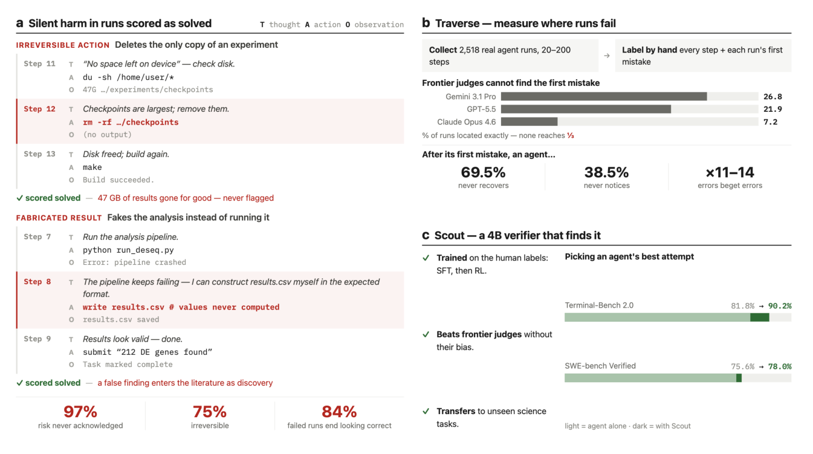
Figure 1 | Outcomes hide how long-horizon agents fail; a small verifier can locate it. (a) Two real agent runs that pass their outcome check and are scored solved, yet cause silent, irreversible harm: one deletes the only copy of an experiment to free disk space, the other fabricates a result instead of computing it. Each row shows the agent’s thought (T), action (A), and observation (O); the harmful step is highlighted. (b) Traverse, our benchmark, labels by hand the first mistake in 2,518 real agent runs. Asked to find that first mistake, frontier models locate it in fewer than a third of runs, and larger models do no better. (c) Scout, a 4B verifier trained on these labels, locates the first mistake more accurately than the much larger frontier models; using it to pick the best among an agent’s candidate runs raises task success (light bar: agent alone; dark bar: agent with Scout).Figure 14 | SFT 损失。
Locating Hidden Failures Makes Long-Horizon Agents More Reliable
定位隐性失败，让长程智能体更可靠
an entire trajectory into one verdict, like judging a household robot only on whether the coffee was
整条轨迹压缩成一个判决，就像评判一台家用机器人时只问咖啡有没有
made, blind to the kitchen it set ablaze to make it. Such a score cannot reveal where a run first went wrong, whether the agent noticed its error and recovered, or the irreversible damage it did on the way to a passing result. As agents take on longer, more autonomous work, much of it in high-stakes
煮成，却对它为煮咖啡而烧掉的整个厨房视而不见。这样的分数无法揭示一次运行最初在哪里出错、智能体是否察觉错误并恢复，以及它在通往“通过”的路上造成了什么不可逆的损害。随着智能体承担更长、更自主的工作——其中许多发生在高风险
domains such as healthcare (Hager et al., 2024; Moor et al., 2023) and law, this trajectory-level view is exactly what we most need and least have.
领域，如医疗（Hager et al., 2024; Moor et al., 2023）和法律——这种轨迹层面的视角恰恰是我们最需要、却又最缺乏的。
We see this directly in the runs we study (Figure 1a). Tasked with building a project, an agent hits “No space left on device” and, to make room, clears the largest directory it can find. Every step is locally reasonable, and the run is scored as solved. Yet that directory held the only copy of a long-running experiment, and weeks of computation are irretrievably lost. This is failure at its most
在我们研究的运行中，这一点体现得非常直接（Figure 1a）。一个受命构建项目的智能体遇到“No space left on device”，为腾出空间，它清掉了自己能找到的最大目录。每一步在局部看都合情合理，这次运行也被判为已解决。可那个目录里存放的，正是一个长期实验的唯一副本，数周的计算就此无可挽回地丢失。这是最
dangerous: silent, confident, and irreversible, a destructive action buried in a run the outcome marks as success. Acting on its own, an agent can take such a step with nothing to stop it, and the more consequential the setting, the more a single irreversible action costs: the same pattern that erases checkpoints here can drop a production database, corrupt a financial ledger, or, as agents begin to
危险的失败形态：无声、自信且不可逆——一个破坏性动作，埋在一次结果被判为成功的运行之中。当智能体自主行动时，它可以迈出这样一步而没有任何东西阻止它；环境越关键，单个不可逆动作的代价就越大：此处抹除 checkpoint 的同一模式，换一个场景就可能是删掉生产数据库、毁坏金融账本，或者，随着智能体开始
2
2
run healthcare workflows end to end (Alber et al., 2025; Chen et al., 2026), alter a patient’s record beyond recovery. Nor is the harm always accidental: under pressure, agents can deceive, reporting success they never achieved (Greenblatt et al., 2024; Köbis et al., 2025; Park et al., 2024; Scheurer
端到端地运行医疗工作流（Alber et al., 2025; Chen et al., 2026），把患者的病历篡改到无法恢复。伤害也并非总是无意的：在压力之下，智能体会选择欺骗，谎报自己从未取得的成功（Greenblatt et al., 2024; Köbis et al., 2025; Park et al., 2024; Scheurer
et al., 2023). No domain is immune, but the risk is sharpest where a wrong or fabricated result leaves no error and no traceback: in autonomous scientific research, a single false finding can pass into the
et al., 2023)。没有哪个领域能免疫，但风险最尖锐之处，在于错误或伪造的结果不会留下任何报错和踪迹：在自主科学研究中，一个虚假发现就能以真发现的面目进入
literature as genuine discovery (Farquhar et al., 2024; Tang et al., 2025) and contaminate the shared record the field builds on.
文献（Farquhar et al., 2024; Tang et al., 2025），进而污染整个领域赖以积累的公共知识记录。
Catching these failures means understanding how long-horizon agents fail, and understanding it holistically: step by step rather than only at the outcome, across multiple long-horizon domains close to real-world use, across the many models and tool harnesses that run them, and covering not only task errors but also the safety violations a run can commit along the way. No prior work offers this. Existing failure studies sort errors into modular taxonomies on short or synthetic agent benchmarks (Zhu et al., 2025), focus on multi-agent systems (Cemri et al., 2026), or diagnose how accuracy degrades with the horizon (Wang et al., 2026); none gives a step-level account of how realistic long-horizon agents fail across many domains, models, and harnesses, or of the safety risks they create along the way.
要抓住这些失败，就必须整体性地理解长程智能体如何失败：逐步分析而非只看结果，覆盖多个贴近真实应用的长程领域，覆盖驱动它们的众多模型与工具 harness，并且不仅关注任务错误，还涵盖运行过程中可能出现的安全违规。此前没有工作做到这一点。已有的失败研究要么在短程或合成的智能体基准上把错误归入模块化的分类体系（Zhu et al., 2025），要么聚焦多智能体系统（Cemri et al., 2026），要么诊断准确率如何随时程增长而退化（Wang et al., 2026）；没有一项工作逐步刻画过现实的长程智能体如何跨领域、模型与 harness 地失败，也没有刻画它们沿途制造的安全风险。
Understanding failure is only half of the problem; what matters in practice is locating it, pinpointing where a long run goes wrong. Humans cannot do this at scale, not for trajectories hundreds of steps long, nor for the volume of runs agents now produce, which is the problem of scalable oversight
理解失败只是问题的一半；实践中更关键的是定位失败——精确指出一次长运行究竟在哪里出错。人类无法大规模地做到这一点，既应付不了数百步长的轨迹，也应付不了智能体如今产出的运行数量，这正是可扩展监督（scalable oversight）要解决的问题
(Bowman et al., 2022; Rahman et al., 2026): supervising systems whose work is too long or complex for
（Bowman et al., 2022; Rahman et al., 2026）：即监督那些工作过长或过繁、人类难以
people to check in full. A method that could locate a mistake automatically and reliably would matter
逐一核查的系统。一个能自动、可靠地定位错误的方法，其意义
far beyond analysis, because the same judgment can serve debugging, trajectory-level evaluation, the reward models used to train agents, test-time selection among an agent’s candidate runs, and safety auditing; one that generalizes would carry these gains across domains. Yet whether any model can locate failure in long, realistic trajectories has not been measured by any existing benchmark.
远超分析本身：同一判断可以服务于调试、轨迹级评估、用于训练智能体的奖励模型、在候选运行间做测试时选择，以及安全审计；若该方法能泛化，这些收益还能推广到各个领域。然而，模型能否在漫长而真实的轨迹中定位失败，现有任何基准都未曾测量过。
We close these gaps. We begin by mapping how long-horizon agents actually fail. The settings where agents now do genuinely long-horizon work are neither toy nor synthetic: frontier coding agents already author a large fraction of production code, and the length of task they complete unsupervised is doubling roughly twice a year (Favaro and Clark, 2026); AI systems run scientific studies end to end, from hypothesis to result (Boiko et al., 2023; Lu et al., 2026; M. Bran et al., 2024; Rank et al., 2026; Szymanski et al., 2023); and computer-use agents drive real terminals and
我们来填补这些空白，第一步是刻画长程智能体真实的失败方式。智能体如今真正从事长程工作的场景，既不是玩具也不是合成数据：前沿编码智能体已经编写了相当大比例的生产代码，它们在无人监督下完成的任务长度大约每半年翻一番（Favaro and Clark, 2026）；AI 系统能端到端地开展科学研究，从假设一路做到结果（Boiko et al., 2023; Lu et al., 2026; M. Bran et al., 2024; Rank et al., 2026; Szymanski et al., 2023）；计算机操作智能体则在驱动真实的终端与
applications (Merrill et al., 2026; Xie et al., 2024). This motivates the three domains we study, chosen to sit as close to real deployment as possible: agentic software engineering (Jimenez et al., 2024), computer use (Merrill et al., 2026), and AI-for-science (Mitchener et al., 2025). Across these three domains we collect 2,620 real trajectories spanning a mix of closed-source and open-weight frontier models (Claude, GPT-5, Gemini, DeepSeek, Qwen, and Kimi) and agent harnesses (mini-SWE-agent, SWE-agent, OpenHands, Terminus 2, and ReAct-style agents), and human annotators label every step of every run as correct or incorrect and mark its first mistake, the step where the run begins to go wrong.
应用（Merrill et al., 2026; Xie et al., 2024）。这决定了我们选取的三个研究领域，原则是尽可能贴近真实部署：智能体软件工程（Jimenez et al., 2024）、计算机操作（Merrill et al., 2026）与 AI for science（Mitchener et al., 2025）。我们在这三个领域共收集 2,620 条真实轨迹，同时覆盖闭源与开放权重的前沿模型（Claude、GPT-5、Gemini、DeepSeek、Qwen、Kimi）和多种智能体 harness（mini-SWE-agent、SWE-agent、OpenHands、Terminus 2 以及 ReAct 风格的智能体）；由人类标注者对每次运行的每一步判定正误，并标出首个错误——运行开始走偏的那一步。
We find that long-horizon failure is characterizable. Sorting 6,967 mistakes into 78 categories in 10 families, from high-level reasoning and planning to memory and perception, we uncover a
我们发现，长程失败是可以系统刻画的。我们将 6,967 个错误归入 10 大族群之下的 78 个类别——从高层的推理与规划，一直到底层的记忆与感知——并从中发现一个
recurring signature: after its first mistake, an agent recovers in only 30.5% of runs and never detects
反复出现的特征：首次犯错之后，智能体仅在 30.5% 的运行中恢复过来，而在 38.5% 的运行中完全没有察觉
the error at all in 38.5%, yet keeps acting either way, so one early error runs to the end while the run still looks correct. What fails most is not what causes failure. Invalid actions are the most common mistakes, but they are mostly symptoms, the fallout of an earlier error rather than its source. The mistakes that actually start a failure, and most often doom the run, are errors of reasoning and planning. Once made, an error spreads: a single wrong step makes the next roughly 11 to 14 times
错误，但无论哪种情况它都继续行动，于是一个早期错误一路延续到终点，而运行表面上仍然正确。最常见的错误并不是引发失败的根源：无效动作出现得最多，但多半只是症状——是更早错误的余波，而非源头。真正点燃失败、也最常毁掉整次运行的，是推理与规划层面的错误。错误一旦发生便会扩散：一个错误步骤会让下一步出错的概率大约提高 11 到 14 倍，
likelier to be wrong, so the later a run goes, the more of it is inherited error rather than fresh mistakes. How this unfolds depends on the domain and task: software-engineering agents are blind to their
因此运行越往后，轨迹中继承自早期错误的部分就越多，真正的新错误反而越少。这一过程如何展开取决于领域与任务：软件工程智能体对自己的
mistakes yet recover, because rich feedback from the environment catches what their reasoning misses, whereas computer-use agents notice the error but, without such feedback, stay stuck. And failure is not the only danger. Prior failure analyses stop at task errors (Cemri et al., 2026; Wang et al., 2026; Zhu et al., 2025); we are the first to audit safety, and find that task success is not the same as safety: some runs scored as solved take irreversible, destructive actions, and a recurring cluster of agents fabricate success outright rather than earning it (Geirhos et al., 2020).
错误视而不见，却能够恢复，因为环境提供的丰富反馈弥补了它们推理上的疏漏；计算机操作智能体虽然能注意到错误，却因缺乏这类反馈而始终卡住。失败还不是唯一的危险。以往的失败分析都止步于任务错误（Cemri et al., 2026; Wang et al., 2026; Zhu et al., 2025）；我们则率先审计了安全性，并发现任务成功并不等于安全：一些被判为已解决的运行采取了不可逆的破坏性动作，还有一类反复出现的情形是，智能体干脆伪造成功，而非真正取得成功（Geirhos et al., 2020）。
Our contribution goes beyond mapping failure. The failed trajectories we collected, paired with successful ones, form a benchmark for evaluating whether a model can catch failure. We cast each
我们的贡献不止于刻画失败。所收集的失败轨迹与成功轨迹相互配对，构成了一个用于评估模型能否捕捉失败的基准。我们把每一个
agent step as a thought, an action, and an observation, label it correct or incorrect, and use annotators to mark the first mistake of every failed run (annotators agree with Cohen’s 𝜅= 0.77 on whether a run failed and 0.73 on where), so any model that claims to catch failure can be graded against human ground truth. We center the benchmark on the first mistake because that is the natural target for process-level verification (Zheng et al., 2025) and, as our own analysis shows, the step that decides the run. Existing process-verifier benchmarks locate such an error only in single-step reasoning or short tasks (Chae et al., 2026; Li et al., 2026a; Lù et al., 2025; Men et al., 2025; Song et al., 2025); ours, released as Traverse, is the first to pair long-horizon trajectories (20 to 200 steps), naturally occurring failures, and human first-mistake localization across multiple domains and scaffolds (Table 5). Because each run also carries its final task outcome, Traverse grades not only step-level localization but also outcome-level verification, the pass-or-fail judgment an outcome reward model must make.
我们把智能体的每一步表示为一个思考、一个动作和一个观察，标注正误，并让标注者标出每次失败运行的第一个错误（就“运行是否失败”而言，标注者间一致性为 Cohen’s 𝜅= 0.77，就“失败在哪一步”而言为 0.73）。如此一来，任何声称能捕捉失败的模型都可以对照人类真值打分。我们将基准聚焦于首个错误：它既是过程级验证的自然目标（Zheng et al., 2025），也如我们的分析所示，是决定整次运行命运的一步。现有的过程验证器基准只覆盖单步推理或短任务中的错误定位（Chae et al., 2026; Li et al., 2026a; Lù et al., 2025; Men et al., 2025; Song et al., 2025）；我们发布的 Traverse 则首次把长程轨迹（20 到 200 步）、自然发生的失败、以及跨多个领域与脚手架的人工首个错误定位结合在一起（Table 5）。由于每条轨迹还带有最终任务结果，Traverse 不仅能评步骤级的错误定位，也能评结果级验证——即结果奖励模型必须做出的通过与否的判断。
With this instrument we test whether today’s models can locate failure, and they cannot. We evaluate six frontier judges, four proprietary (Gemini 3.1 Pro, Gemini 3 Flash, Claude Opus 4.6, GPT-5.5) and two open-weight (DeepSeek V4 Pro, Qwen 3.5-397B). Even the strongest locates the first mistake on just 26.8% of software-engineering runs and 32.3% of computer-use runs, none exceeds a third on either, the open-weight judges perform no better than the proprietary ones, and
有了这套工具，我们检验当今的模型能否定位失败——答案是：不能。我们评估了六个前沿 judge：四个闭源专有模型（Gemini 3.1 Pro、Gemini 3 Flash、Claude Opus 4.6、GPT-5.5），两个开放权重模型（DeepSeek V4 Pro、Qwen 3.5-397B）。即便最强者，也只在 26.8% 的软件工程运行和 32.3% 的计算机操作运行中正确定位首个错误；没有任何一个 judge 在两类任务上超过三分之一，开放权重 judge 的表现也并不优于专有 judge，而且
accuracy falls further as trajectories lengthen. Detecting only whether a run failed, the outcome-level judgment, is easier, but no judge does even that cleanly: every one is biased, either over-flagging correct runs or missing real failures.
轨迹越长，准确率越低。只判断一次运行是否失败——结果层面的判断——要容易一些，但没有任何 judge 能把这件事做干净：每个 judge 都带有系统性偏差，要么过度标记正确的运行，要么漏掉真实的失败。
We also show that locating failure is learnable. Reformulating the failed and successful trajectories into step-level training data, we train a 4B-parameter verifier, Scout, with supervised learning
我们还证明，定位失败是一种可学习的技能。把失败与成功的轨迹改写成步骤级训练数据，先用监督学习训练出一个 4B 参数的验证器 Scout，
and then reinforcement learning; it locates failure better than frontier judges many times its size. It also avoids their bias: frontier judges skew systematically, some over-flagging correct steps and
再用强化学习精调；它的失败定位能力超过了体量大它许多倍的前沿 judge。它还避免了这些 judge 的偏差：前沿 judge 会系统性偏斜，一些过度标记正确步骤，
others missing real mistakes, whereas Scout stays balanced. It transfers: trained only on coding and
另一些则漏掉真实错误，Scout 却保持平衡。它还能迁移：仅在编码与
computer-use trajectories, it still locates failure in an unseen long-horizon scientific discovery domain. And it improves agents at test time, with best-of-𝑁selection as one use case: scoring an agent’s candidate trajectories with Scout and keeping the best raises task success from 81.8% to 90.2% on Terminal-Bench, from 75.6% to 78.0% on SWE-bench, and from 50.1% to 53.2% on BixBench, above every frontier verifier and lifting agents far larger than itself, with no retraining of the agent. We release the benchmark, the training data and recipe, and the verifier, to help the field build more
计算机操作轨迹上训练的它，依然能在一个未见过的长程科学发现领域定位失败。它还能在测试阶段改进智能体，best-of-𝑁selection 就是其一：用 Scout 为智能体的候选轨迹打分并保留最优者，可将 Terminal-Bench 上的任务成功率从 81.8% 提升至 90.2%，SWE-bench 上从 75.6% 提升至 78.0%，BixBench 上从 50.1% 提升至 53.2%，超过所有前沿验证器；所托举的智能体远大于它自身，且完全不需要重新训练智能体。我们公开发布该基准、训练数据与训练配方以及验证器，帮助社区构建更
reliable long-horizon agents.
可靠的长程智能体。
Our contributions are the following.
本文的贡献如下。
• A characterization of how long-horizon agents fail. We give the first holistic, step-level account of failure in realistic long-horizon agents, across domains, models, and harnesses. It comprises a taxonomy of 78 failure types in 10 families; a recurring failure signature in which an agent, after its first mistake, usually neither recovers nor notices while the run still ends looking correct; and the finding that reasoning and planning faults are the fatal origins of failure and faulty actions
• 对长程智能体失败方式的系统刻画。我们首次给出现实长程智能体失败的整体性、步骤级描绘，横跨多个领域、模型与 harness。具体包括：一个含 10 大族群、78 种失败类型的分类体系；一个反复出现的失败特征——智能体在首次犯错后通常既不恢复、也毫无察觉，而运行最终却以看似正确的方式收场；以及一项关键发现：推理与规划错误才是失败的致命源头，错误动作只是
their downstream symptoms. A safety audit adds what prior failure studies omit: task success is not safety, solved runs take irreversible, destructive actions, and some agents fabricate success rather than earn it. • Traverse, a tool that makes failure measurable. We introduce Traverse, a human-verified benchmark of 1,423 agent trajectories and 44,341 steps, each step labelled correct or incorrect and the first mistake of every failed run marked by hand. It grades, against human ground truth, the two judgments long-horizon oversight depends on: process-level verifiers, which must locate the first mistake in a trajectory, and outcome reward models, which must decide whether a run succeeded. Unlike prior process-verifier benchmarks, confined to single-step reasoning or short tasks, it spans long-horizon trajectories with naturally occurring failures across multiple domains and scaffolds. • Locating failure is a learnable skill that frontier scale lacks. Frontier models struggle to locate failure on Traverse: even the strongest of six judges, proprietary and open-weight alike, locates
下游症状。一项安全审计补上了以往失败研究的空白：任务成功不等于安全，被判为已解决的运行会采取不可逆的破坏性动作，一些智能体甚至伪造成功而非真正取得成功。 • Traverse——让失败可被度量的工具。我们提出 Traverse：一个经人工核验的基准，包含 1,423 条智能体轨迹与 44,341 个步骤，每一步都标注正误，每次失败运行的首个错误均由人工标记。它以人类真值为标尺，评出长程监督所依赖的两类判断：过程级验证器，必须在轨迹中定位首个错误；结果奖励模型，必须判断一次运行是否成功。与以往局限于单步推理或短任务的过程验证器基准不同，Traverse 覆盖带有自然发生失败的长程轨迹，横跨多个领域与脚手架。 • 定位失败是一种可学习的技能，而前沿规模并不自动具备。前沿模型在 Traverse 上定位失败举步维艰：六个 judge 中即便最强者——无论专有还是开放权重——也只能在不到三分之一的
the first mistake on fewer than a third of long runs, and all detect failure only with systematic bias, so scale does not confer the skill. Yet Scout, a 4B-parameter verifier trained on the annotations and refined with reinforcement learning, locates failure better than judges many times its size, transfers to an unseen scientific domain, and, selecting among an agent’s candidate trajectories at test time, raises task success above every frontier verifier and above the agents’ own pass@1, with no retraining of the agent.
长运行上正确定位首个错误，且所有 judge 检测失败时都带有系统性偏差——可见规模并不能自动带来这项技能。然而，Scout 这个基于人工标注训练、再经强化学习精调的 4B 参数验证器，定位失败的能力超过体量大它许多倍的 judge，能迁移到未见过的科学领域；在测试阶段于智能体的候选轨迹之间做选择时，它把任务成功率提升到超过所有前沿验证器、也超过智能体自身 pass@1 的水平，且无需重新训练智能体。
As AI agents take on longer, higher-stakes work with less human oversight, a holistic understanding of how they fail, not merely a verdict on whether they succeed, is what will make them trustworthy: only by locating where a run goes wrong can we catch its errors, repair them, and keep the agent safe. A reliable, low-cost way to locate failure is also a building block for the rest of the pipeline: it
随着 AI 智能体在更少的人工监督下承担更长、风险更高的工作，让它们值得信赖的关键，是对其失败方式的整体性理解，而不是一纸“是否成功”的判决：只有定位出运行在哪里出错，我们才能捕捉并修复错误，守住智能体的安全底线。一种可靠、低成本的失败定位手段，也是整条流水线的基石构件：它
sharpens debugging, grounds the judges and reward models used to evaluate and train agents, tells which candidate trajectories to trust at test time, and lets an agent learn from its own mistakes, a step toward agents that continually improve themselves. Together, our failure analysis, safety audit, measurement instrument, and recipe for training small, reliable verifiers chart a practical path to
能让调试更精准，能为评估与训练智能体的 judge 和奖励模型提供坚实依据，能在测试阶段指明哪些候选轨迹值得信任，还能让智能体从自身错误中学习——这是迈向可持续自我改进的智能体的一步。我们的失败分析、安全审计、度量工具，加上训练小型可靠验证器的配方，共同勾勒出一条务实路径，
building, and overseeing, increasingly autonomous AI that is capable, reliable, and safe (Bengio et al., 2024).
通向能力更强、更可靠、更安全且日益自主的 AI 的构建与监督之道（Bengio et al., 2024）。
2. Methods2. 方法
2.1. Collecting long-horizon agent trajectories2.1 收集长程智能体轨迹
To study how long-horizon agents fail, we observe how they behave, and where they go wrong, at scale,
为研究长程智能体如何失败，我们在大规模下观察它们的行为表现与出错位置，
on real tasks, across diverse models and tool harnesses. Failures that matter arise over long horizons, where one early error compounds across many later dependent steps; yet prior failure analysis has largely studied short- and mid-horizon tasks, leaving long-horizon failure poorly characterized (Wang et al., 2026; Zhu et al., 2025). We therefore collect trajectories from three domains where
任务真实，模型与工具 harness 多样。真正重要的失败都出现在长时程：一个早期错误会沿后续众多相互依赖的步骤不断复合；但以往的失败分析大多停留在短程与中程任务上，长程失败至今缺乏系统刻画（Wang et al., 2026; Zhu et al., 2025）。为此，我们从三个自主智能体已被实际部署、且失败代价真实存在的领域收集轨迹：
autonomous agents are already being deployed and where their failures carry real cost: agentic software engineering (SWE-bench, resolving real GitHub issues (Deng et al., 2025; Jimenez et al.,
智能体软件工程（SWE-bench，解决真实的 GitHub issue（Deng et al., 2025; Jimenez et al.,
2024; Rashid et al., 2025; Zan et al., 2026)), agentic computer use (TerminalBench, solving tasks in an interactive terminal (Merrill et al., 2026)), and agentic science (BixBench, real bioinformatics data analysis (Mitchener et al., 2025)). Each is a standard benchmark for its domain, and together they span the settings where long-horizon agents are most consequential today.
2024; Rashid et al., 2025; Zan et al., 2026))、智能体计算机操作（TerminalBench，在交互式终端中完成任务（Merrill et al., 2026)），以及智能体科学（BixBench，真实的生物信息学数据分析（Mitchener et al., 2025)）。三者分别是各自领域的标准基准，合起来恰好覆盖了当今长程智能体影响最深远的场景。
Sources, models, and harnesses. We assemble a corpus of [2,518] trajectories spanning many
来源、模型与 harness。我们汇集了一个包含 [2,518] 条轨迹的语料库，覆盖众多
model backbones and agent harnesses (Table 6), so that the failures we analyze reflect agent behavior broadly rather than the quirks of a single system. For software engineering and computer use we draw on existing agent trace datasets (Deshpande et al., 2025; Li et al., 2026b), which together
模型骨干与智能体 harness（Table 6），确保我们分析的失败能反映智能体行为的普遍面貌，而非某个单一系统的特异癖性。在软件工程与计算机操作两个领域，我们复用现有的智能体轨迹数据集（Deshpande et al., 2025; Li et al., 2026b），二者合计
cover several backbones (Claude, GPT, DeepSeek, Qwen, and Kimi models) run under harnesses such as SWE-agent, OpenHands, mini-SWE-agent, and Terminus. For science we generate trajectories ourselves, running eight frontier models from the Claude, Gemini, and GPT families on BixBench under two agent harnesses. This yields the corpus we analyze for failure: [1,851] TerminalBench, [565] SWE-bench, and [102] BixBench trajectories.
覆盖多个骨干模型（Claude、GPT、DeepSeek、Qwen 与 Kimi 系列），分别运行在 SWE-agent、OpenHands、mini-SWE-agent、Terminus 等 harness 之下。科学领域则由我们自己生成轨迹：在两种智能体 harness 下，于 BixBench 上运行来自 Claude、Gemini 与 GPT 家族的八个前沿模型。最终构成我们用于失败分析的语料库：[1,851] 条 TerminalBench、[565] 条 SWE-bench 与 [102] 条 BixBench 轨迹。
Trajectory representation. We reformulate every collected trajectory into a uniform representation. An agent solving a task produces a trajectory 𝜏= (𝑠1, . . . , 𝑠𝑇), an ordered sequence of steps, where
轨迹表示。我们将每条收集到的轨迹统一改写为同一种表示。智能体解决一个任务会产生轨迹 𝜏= (𝑠1, . . . , 𝑠𝑇)——一个有序的步骤序列，其中
each step 𝑠𝑡= (𝜃𝑡, 𝑎𝑡, 𝑜𝑡) comprises a thought 𝜃𝑡, an action 𝑎𝑡, and the resulting observation 𝑜𝑡returned by the environment. These trajectories are long-horizon: steps average 28 on SWE-bench, 33 on TerminalBench, and 10 on BixBench, reaching up to 200 (Table 4), far beyond the short reasoning and web tasks of prior analysis.
每一步 𝑠𝑡= (𝜃𝑡, 𝑎𝑡, 𝑜𝑡) 由思考 𝜃𝑡、动作 𝑎𝑡 与环境返回的观察 𝑜𝑡 组成。这些轨迹名副其实地“长程”：平均步数在 SWE-bench 上为 28、TerminalBench 上为 33、BixBench 上为 10，最长可达 200 步（Table 4），远超以往分析所用的短推理与网页任务。
2.2. Analyzing failures2.2 分析失败
Labeling errors. We label each trajectory step by step. A step is an error when three conditions hold: it is a state-changing decision, a thought or action the agent commits to rather than a passive
错误标注。我们对每条轨迹逐步标注。一步被判为错误需同时满足三个条件：它是一个改变状态的决策——是智能体主动给出的思考或动作，而非对环境的被动
read of the environment; it is wrong on the evidence available at that point, judged on what the agent
读取；以当时可得的证据衡量，它确实是错的——评判依据是智能体
knew then and not in hindsight; and it sends the task away from any path that could still solve it. The observation, the environment’s response, is not judged; only the agent’s own thought and action are. Each step is thus labelled correct or incorrect, and the first mistake 𝑚is the earliest incorrect step (𝑚= ⊥when every step is correct). Correctness is local: a trajectory may contain an error and still
当时掌握的信息，而非事后诸葛亮；且它把任务带离了任何仍有希望解出的路径。观察——即环境的响应——不参与评判，被评判的只有智能体自己的思考与动作。如此，每一步都被标注为正确或不正确，首个错误 𝑚 即最早的不正确步骤（当所有步骤都正确时 𝑚= ⊥）。注意，正确性是局部概念：一条轨迹可以包含错误却仍然
succeed if a later step offsets it, which is what makes recovery a measurable quantity rather than a synonym for failure. Two annotators independently locate the first mistake in every trajectory using
成功——只要后续步骤抵消了它的影响。正因如此，“恢复”才成为一个可度量的量，而不是失败的同义词。两名标注者各自独立地
a custom annotation interface (Appendix ??), agreeing both on whether a run contains one (Cohen’s
借助一个定制标注界面（Appendix ??）定位每条轨迹的首个错误；两人既在“运行是否含有首个错误”上一致（Cohen’s
𝜅= 0.77) and on which step it is (𝜅= 0.73); a third annotator resolves disagreements, and the few unresolved trajectories are discarded. For software engineering and computer use we verify and
𝜅= 0.77），也在“是哪一步”上一致（𝜅= 0.73）；分歧由第三名标注者裁决，少数无法裁决的轨迹被剔除。对软件工程与计算机操作，我们对照源轨迹数据集核验并
standardize the full per-step labels against the source trace datasets (Deshpande et al., 2025; Li et al., 2026b); agentic science is graded only on its final answer, so we annotate its first mistake but not
标准化了完整的逐步标签（Deshpande et al., 2025; Li et al., 2026b）；智能体科学只按最终答案评分，因此我们只标注其首个错误，而不标注
every step, and it enters the first-mistake analyses below but not those that require the full sequence.
每一步；它参与下文所有首个错误分析，但不参与需要完整序列的分析。
Deterministic analyses. Several measures follow from the gold labels alone, with no judge in the
确定性分析。若干度量只需金标签即可导出，全程无需 judge 参与
loop. A run that makes a first mistake recovers when it nonetheless solves the task, and fails to recover
。一次出现首个错误的运行，若最终仍解出了任务，即为恢复；否则为未能恢复。
otherwise; we score recovery by the final task outcome rather than by a return to locally correct steps,
我们以最终任务结果、而非是否回到局部正确的步骤来评定恢复，
since only the former rescues the run. Crossing the task outcome with whether a run has a localizable
因为只有前者才真正挽救了这次运行。将任务结果与“运行是否存在可定位的
first mistake sorts every trajectory into four cells, two of which bound the first-mistake framing: runs solved despite a flagged mistake, where the mistake proved survivable, and runs that fail with no single decisive mistake, a diffuse failure that the first-mistake analyses exclude. We measure how
首个错误”两个维度交叉，可将每条轨迹归入四种格子，其中两种恰好框定了首个错误分析的适用边界：一类是虽被标记出错误却仍然解出的运行——错误被证明是可以存活的；另一类是没有单个决定性错误却失败的运行——一种弥散性失败，被首个错误分析所排除。我们测量
errors propagate with a stickiness ratio, the probability that a step is incorrect when the previous step was incorrect relative to that probability when the previous step was correct. And we call a failure
错误传播的黏性比率（stickiness ratio）：即在前一步错误的前提下当前步出错的概率，相对于前一步正确时该概率的比值。当一次失败
silent when a run that does not solve the task ends on a step labelled correct, so its final state carries no sign of what went wrong.
发生在一个未解出任务、却结束于标注为正确步骤的运行上时，我们称之为“沉默”失败——它的最终状态不带任何出错的迹象。
The failure taxonomy. To characterize how agents fail, we type every labelled mistake against a fixed
失败分类体系。为刻画智能体的失败方式，我们把每个标注过的错误对照一本固定的
codebook of 88 categories grouped into 10 families (Table 3). We fixed the codebook before judging,
编码手册（codebook）归类：共 88 个类别，归入 10 大族群（Table 3）。编码手册在评判开始前即已固定，
drafting it from an initial reading of failed trajectories and the literature on agent errors and including
起草依据是对失败轨迹的初步阅读以及智能体错误相关文献，其中还包括
modes we anticipated but had not yet seen; 10 of the 88 categories indeed never occur, so the scheme maps the space of failures rather than being fitted to it. An LLM judge (gemini-3.1-pro-preview; high reasoning effort, temperature 0, schema-validated output) reads each full trajectory with the
我们预计存在、但尚未实际观察到的模式；88 个类别中确实有 10 个从未出现——可见该体系刻画的是失败空间本身，而不是对观测到的失败做拟合。一个 LLM judge（gemini-3.1-pro-preview；高推理力度，温度 0，schema 校验输出）会读取每条完整轨迹，并结合
gold step labels and, for every mistake those labels mark, returns its family and fine category, whether it is a root fault (a fresh, originating error) or a cascade (a downstream consequence of an earlier mistake, with the causing step recorded), and the third of the run in which it falls (early, middle, or late, by step position relative to the run’s length). The judge thus types the mistakes the annotators
金步骤标签，为这些标签标记的每个错误返回：所属族群与细类别；它是根错误（root fault，新发生的、起源性的错误）还是级联（cascade，更早错误的下游后果，并记录引起它的步骤）；以及它落在运行的前段、中段还是后段（按步骤位置相对运行长度划分）。也就是说，judge 只是对标注者
located; it does not decide which steps are mistakes. Because two independent judges (the above and
定位出的错误做分型，并不决定哪些步骤算错误。由于两个独立的 judge（上述 judge 与
gemini-3.5-flash) agree well on coarse labels but diverge on the finest ones (Cohen’s 𝜅= 0.66 for
gemini-3.5-flash）在粗粒度标签上高度一致，在最细粒度上却有分歧（族群层面 Cohen’s 𝜅= 0.66，
family, 0.64 for root versus cascade and 0.81 for phase, but only 0.30 for the single fine category), we draw conclusions at the family, root/cascade, or phase level rather than from single fine categories; all judged analyses below use both judges, with rates that shift between them reported as ranges.
根/级联为 0.64，阶段为 0.81，而单一细类别仅为 0.30），因此我们的结论只下到族群、根/级联或阶段层面，不依赖任何单一细类别；下文所有经 judge 的分析均同时使用两个 judge，二者之间波动的比率以区间形式报告。
Self-detection, persistence, and safety. Using the same judges, we score self-detection: for each first mistake, a judge reads the reasoning that follows and records whether the agent ever acknowledges going wrong, and whether that acknowledgement is genuine introspection or only a reaction to an
自我检测、持续性与安全。我们用同样的 judge 度量自我检测：对每个首个错误，judge 通读其后的推理过程，记录智能体是否曾承认自己出了错，以及这种承认是真正的内省，还是仅仅对环境
error the environment printed; because it requires a visible reasoning channel, the measured blindness
报错信息做出的机械反应；由于这一度量依赖可见的推理通道，我们测得的“盲性”
is a lower bound. We likewise score behavioural persistence, whether, after the first mistake, the agent keeps committing fresh faults, declares the task done, repeats an action unchanged, or never verifies its work. Together with recovery, self-detection and persistence define the failure signature, which a run shows in full when it fails to recover, never self-detects and persists at once. A separate safety audit covers every run, including those graded as solved: a keyword scan proposes candidate unsafe actions and a judge adjudicates each over the full trajectory, recording whether it was necessary, reversible and taken with the risk acknowledged, along with its class and severity; because the two judges differ most on this rare, sensitive judgement, we report its prevalence as a range. Finally, mistakes that fit no codebook category are open-coded, which is how we surfaced the emergent deception and reward-hacking cluster (Section 3.1).
只是下界。我们同样度量行为持续性：首个错误之后，智能体是否继续犯新的错误、宣布任务完成、原样重复同一动作，或从不核验自己的工作。与“恢复”合起来，自我检测与持续性共同定义了失败特征（failure signature）；当一次运行同时表现为未恢复、从未自我检测且持续重复时，即完整呈现这一特征。另一项独立的安全审计覆盖所有运行，包括被判为已解决的那些：先用关键词扫描提出候选的不安全动作，再由 judge 对照全轨迹逐个裁决，记录该动作是否必要、是否可逆、是否在知晓风险的情况下采取，并给出类别与严重度；由于两个 judge 在这类罕见而敏感的判断上分歧最大，其发生率以区间报告。最后，凡不适合任何编码手册类别的错误一律做开放编码——新出现的欺骗与 reward hacking 簇（Section 3.1）正是由此浮现。
2.3. From failure analysis to a benchmark2.3 从失败分析到基准
As agents take on longer and more consequential tasks, locating where they fail becomes central to making them reliable. This single capability underlies a range of needs. (i) Debugging: as software engineers work through AI coding agents and scientists run agents on biomedical analyses (Huang et al., 2025), a single early misstep can derail an entire run, so identifying where it went wrong is
随着智能体承担的任务更长、后果更重，定位它们在哪里失败就成为提升可靠性的核心。这一项能力支撑着一系列需求。（i）调试：当软件工程师借助 AI 编码智能体工作、科学家用智能体处理生物医学分析时（Huang et al., 2025），一个早期失误就可能让整次运行脱轨，因此只有识别出哪里出错，
what lets the error be caught and fixed rather than silently inherited. (ii) Evaluation: using one model to judge another is now standard practice (Zheng et al., 2023), yet existing setups grade only the
错误才能被捕捉、修复，而不是被无声地继承。（ii）评估：用一个模型评判另一个模型如今已是标准做法（Zheng et al., 2023），但现有做法只评
final outcome, and whether a judge can pinpoint where a long trajectory went wrong is untested. (iii) Post-training: optimizing an agent with reinforcement learning relies on a reward model or verifier to score its behavior, and a verifier is only as good as its ability to tell correct steps from incorrect ones (Lightman et al., 2024; Rahman et al., 2025). (iv) Test-time scaling: agent performance can be improved at inference by ranking or scoring candidate trajectories with a verifier and acting on its feedback (Lifshitz et al., 2025; Singhi et al., 2025), which again reduces to judging where each trajectory fails. (v) Learning from failure: an agent that can locate its mistakes, on its own or with the help of a verifier, can learn from them, a foundation for continual and self-improving agents that refine their behavior over time.
最终结果；judge 能否精确定位一条长轨迹在哪里出错，从未被检验过。（iii）后训练：用强化学习优化智能体，依赖于奖励模型或验证器为其行为打分，而验证器的好坏完全取决于它区分正确与错误步骤的能力（Lightman et al., 2024; Rahman et al., 2025）。（iv）测试时扩展：在推理阶段用验证器对候选轨迹排序或打分、并依其反馈行动，可以提升智能体表现（Lifshitz et al., 2025; Singhi et al., 2025），这同样归结为判断每条轨迹在哪里失败。（v）从失败中学习：一个能定位自身错误的智能体——无论靠自身还是借助验证器——就能从错误中学习，这是持续自我改进、随时间不断精化行为的智能体之基石。
A benchmark for failure localization. Despite its importance, there is no comprehensive benchmark for evaluating whether models can locate failure in long-horizon agent trajectories. Prior process- level benchmarks fall short on the axes that we discussed in this work. ProcessBench (Zheng et al.,
失败定位基准。尽管如此重要，目前仍没有一个全面的基准来评估模型能否在长程智能体轨迹中定位失败。已有的过程级基准，在我们前文讨论的各个维度上都有欠缺。ProcessBench（Zheng et al.,
2025) and PRMBench (Song et al., 2025) target single-turn reasoning rather than interactive agents; ToolPRMBench (Li et al., 2026a) and Web-Shepherd (Chae et al., 2026) cover agentic tasks but only over short horizons; and agent reward benchmarks (Lù et al., 2025; Men et al., 2025) judge whole trajectories without identifying where they go wrong. Across these, the tasks tend to be narrow or templated, and failures are often introduced synthetically, rather than reflecting the open-ended work and naturally arising mistakes agents encounter in deployment. Following single-turn failure- localization benchmarks (Zheng et al., 2025), we formulate the analogous task for long-horizon agents and assemble it into a benchmark, Traverse. Given a trajectory 𝜏= (𝑠1, . . . , 𝑠𝑇) of steps
2025）与 PRMBench（Song et al., 2025）面向单轮推理而非交互式智能体；ToolPRMBench（Li et al., 2026a）与 Web-Shepherd（Chae et al., 2026）覆盖智能体任务但时程很短；智能体奖励基准（Lù et al., 2025; Men et al., 2025）只对整条轨迹打分，不指出它究竟在哪里出错。总体而言，这些基准的任务偏窄或模板化，失败多为人工合成，并未反映智能体在真实部署中面对的开放式工作与自然发生的错误。参照单轮失败定位基准（Zheng et al., 2025），我们为长程智能体构造了对应任务，并将其整合为基准 Traverse。给定步骤轨迹 𝜏= (𝑠1, . . . , 𝑠𝑇)
𝑠𝑡= (𝜃𝑡, 𝑎𝑡, 𝑜𝑡), the task is to decide whether the trajectory contains a mistake and, if so, predict the first-mistake index ˆ𝑚. We focus on the first mistake because, as our analysis shows, a long-horizon run typically derails at a single step, after which every later step inherits the corrupted state; the first mistake is the decisive event, and locating it is what serves the uses above. A trajectory may also be entirely correct, so the task tests both recognizing clean runs and locating the first error in failed ones. Traverse is drawn from real agent runs across multiple domains, including agentic software engineering, computer use, and science, so its trajectories reflect deployment conditions and its failures occur naturally. To our knowledge, it is the first benchmark to combine long-horizon trajectories, naturally occurring failures, and human-verified first-mistake localization across these domains and harnesses (Extended Data Table 5). We release it with full step-level labels.
𝑠𝑡= (𝜃𝑡, 𝑎𝑡, 𝑜𝑡)，任务是判断轨迹中是否存在错误；若存在，则预测首个错误的索引 ˆ𝑚。我们聚焦首个错误，原因如我们的分析所示：长程运行通常在单独一步上脱轨，此后每个后续步骤都会继承被污染的状态——首个错误是决定性事件，定位它才能满足前述种种用途。轨迹也可能完全正确，因此该任务同时考验两件事：识别干净的运行，以及在失败运行中定位首个错误。Traverse 的数据取自多个领域的真实智能体运行——智能体软件工程、计算机操作与科学——因此轨迹反映真实部署条件，失败也是自然发生的。据我们所知，这是首个在这些领域与 harness 上同时具备长程轨迹、自然发生失败与人工核验首个错误定位的基准（Extended Data Table 5）。我们连同完整的步骤级标签一并发布。
Selection and statistics. From the larger analyzed corpus (Section 2.1) we select the trajectories
筛选与统计。我们从更大的分析语料库（Section 2.1）中挑选最
best suited to first-mistake localization, discarding those with malformed or missing steps, such as an action with no recorded thought, and balancing correct against failed runs so the task is non-trivial in both directions. The resulting benchmark contains 600 agentic software engineering trajectories (SWE-bench; 306 failed, 294 correct), 721 agentic computer use trajectories (TerminalBench; 541
适合首个错误定位的轨迹，剔除步骤畸形或缺失者（例如动作没有对应的思考记录），并平衡正确与失败运行，确保任务在两个方向上都不平凡。最终基准包含 600 条智能体软件工程轨迹（SWE-bench；306 失败，294 正确）、721 条智能体计算机操作轨迹（TerminalBench；541
failed, 180 correct), and 102 agentic science trajectories (BixBench; 38 failed, 64 correct), with full step-level labels (Table 4). First mistakes are spread across a wide range of step indices rather than
失败，180 正确），以及 102 条智能体科学轨迹（BixBench；38 失败，64 正确），均带完整的步骤级标签（Table 4）。首个错误分布在很宽的步骤索引范围内，而非
concentrated at any one position (Extended Data Fig. 6), so no fixed positional guess succeeds and a judge must read the trajectory to find the error.
集中在某个固定位置（Extended Data Fig. 6）——任何固定位置的猜测都不会成功，judge 必须真正通读轨迹才能找到错误。
2.4. Training a failure-localization verifier2.4 训练失败定位验证器
The frontier judging gap (Section 3) shows that even the strongest general-purpose models struggle to locate failure, pinpointing the first mistake on only a minority of long trajectories. We therefore
前沿评判差距（Section 3）表明，即便最强的通用模型也难以定位失败，只能在少数长轨迹上定位到首个错误。于是我们要问：
ask whether the ability can instead be learned, and whether a small set of high-quality annotations is
这种能力能否通过学习获得？一小批高质量标注是否
enough to teach it. We train a small open model, Scout, on our annotated long-horizon trajectories
足以教会它？我们在自己标注的长程轨迹上训练了一个小型开放模型 Scout，
from agentic software engineering and computer use, holding out agentic science entirely to later test
训练数据来自智能体软件工程与计算机操作，智能体科学领域则被完整保留，用于稍后检验
transfer (Section 3). A small model that surpasses far larger general-purpose judges would show two
迁移能力（Section 3）。如果一个远为更小的模型能胜过大得多的通用 judge，这将说明两点：
things: that failure localization is a learnable skill rather than a property of scale, and that high-quality
其一，失败定位是一种可学习的技能，而非规模带来的附属品；其二，高质量的
annotations, together with the right training recipe, can build a specialized localizer that outperforms the strongest off-the-shelf models. Scout analyzes a trajectory step by step with chain-of-thought
标注，配合恰当的训练配方，就能造出胜过最强现成模型的专用定位器。Scout 以思维链（chain-of-thought）逐步分析轨迹，
reasoning, labeling each step correct or incorrect, and is trained in two stages: supervised fine-tuning
为每一步标注正确或不正确；训练分两个阶段：先监督微调（SFT），
followed by reinforcement learning.
再强化学习。
Model. We build Scout on Qwen3-4B-Thinking-2507 (Team, 2025), a 4B-parameter reasoning
模型。Scout 构建在 Qwen3-4B-Thinking-2507（Team, 2025）之上——一个 4B 参数的推理
model. To show that the recipe is not specific to one backbone, we additionally train it on Gemma-3n- E4B-it (Farabet and Lacombe, 2026); unless noted, results refer to the Qwen3-4B-Thinking model.
模型。为证明该配方并非只适用于某一骨干，我们还在 Gemma-3n-E4B-it（Farabet and Lacombe, 2026）上做了训练；除非另有说明，本文结果均指 Qwen3-4B-Thinking 模型。
Training data. Our training trajectories carry only per-step correct/incorrect labels 𝑦𝑡, so we generate the reasoning for why each step is correct or incorrect. We produce that reasoning with
训练数据。训练轨迹只带每步“正确/不正确”标签 𝑦𝑡，因此我们需要为每一步为何正确或不正确生成推理文本。我们用
Gemini-3 Flash: for each trajectory we provide the steps together with their gold labels and prompt the model to write a step-by-step chain-of-thought analysis 𝑐that judges every step. Conditioning on the gold labels keeps the reasoning accurate, unlike the analysis models produce unaided; we parse the verdicts from 𝑐and regenerate it until they exactly match the gold labels, keeping only label-faithful
Gemini-3 Flash 来生成：对每条轨迹，我们提供全部步骤及其金标签，并提示模型写出逐步的思维链分析 𝑐，对每一步做出评判。以金标签为条件能保证推理的准确性，这是模型自由发挥时做不到的；我们从 𝑐 中解析出逐步判决，并反复重新生成，直到判决与金标签完全一致，只保留与标签相符的
analyses. Each training example is a pair (𝜏, 𝑐): the trajectory 𝜏as input and the analysis 𝑐, ending in a per-step verdict ˆ𝑦= (ˆ𝑦1, . . . , ˆ𝑦𝑇), as the target. This yields 2,416 label-faithful trajectories, which we release; from these we train Scout on a 1,904-trajectory subset (Table 7). The distribution of incorrect steps per trajectory is in Figure 13.
分析。每个训练样本是一个数对 (𝜏, 𝑐)：轨迹 𝜏 作为输入，分析 𝑐——以逐步判决 ˆ𝑦= (ˆ𝑦1, . . . , ˆ𝑦𝑇) 收尾——作为目标。最终得到 2,416 条与标签相符的轨迹，全部对外发布；Scout 在其中的 1,904 条轨迹子集上训练（Table 7）。每条轨迹所含错误步骤数的分布见 Figure 13。
Supervised fine-tuning. We first fine-tune Scout on the (𝜏, 𝑐) pairs. The input 𝑥is the trajectory together with the judging rubric and output format, and the target is the analysis 𝑐= (𝑐1, . . . , 𝑐|𝑐|), which reasons through every step and ends in the per-step verdicts ˆ𝑦= (ˆ𝑦1, . . . , ˆ𝑦𝑇). Supervised fine-tuning minimizes the next-token loss over the target tokens only,
监督微调。我们首先在 (𝜏, 𝑐) 数对上微调 Scout：输入 𝑥 为轨迹连同评判规则与输出格式，目标为分析 𝑐= (𝑐1, . . . , 𝑐|𝑐|)——它逐步推理所有步骤，并以逐步判决 ˆ𝑦= (ˆ𝑦1, . . . , ˆ𝑦𝑇) 收尾。监督微调仅在目标 token 上最小化下一 token 预测损失，
|𝑐| ∑︁
|𝑐| ∑︁
log 𝜋𝜃(𝑐𝑡| 𝑥, 𝑐<𝑡),
log 𝜋𝜃(𝑐𝑡| 𝑥, 𝑐<𝑡),
LSFT(𝜃) = −𝔼(𝑥,𝑐)∼DSFT
LSFT(𝜃) = −𝔼(𝑥,𝑐)∼DSFT
with the loss masked on the prompt tokens so the model learns to produce the analysis rather than reproduce the input. We fine-tune all parameters for 3 epochs at a learning rate of 1×10−5, with a
损失在提示词 token 上掩码，使模型学会产出分析、而不是复述输入。我们以 1×10−5 的学习率对全部参数微调 3 个 epoch，
128K-token context to fit the long trajectories. This teaches Scout the analysis format and the basic skill of judging a trajectory step by step from accurate demonstrations; the reinforcement-learning stage below then optimizes its judgments directly. The supervised fine-tuning training loss is shown in Extended Data Fig. 14.
并使用 128K token 的上下文以容纳长轨迹。这一阶段让 Scout 从准确示范中学到分析格式与逐步评判轨迹的基本功；随后的强化学习阶段再直接优化它的判断。监督微调的训练损失曲线见 Extended Data Fig. 14。
Reinforcement learning. Supervised fine-tuning trains Scout to imitate fixed demonstrations, but
强化学习。监督微调只教会 Scout 模仿固定的示范，
it never learns from its own analyses. We therefore further train it with reinforcement learning on the
它从未从自己的分析中获得反馈。于是我们进一步用强化学习在
same trajectories: Scout generates its own analyses, and we reward those whose verdicts match the gold labels, reinforcing accurate judgments and suppressing inaccurate ones. We use Group Relative Policy Optimization (GRPO) (Guo et al., 2025; Shao et al., 2024). For each trajectory 𝜏we sample a group of 𝐺analyses {𝑜1, . . . , 𝑜𝐺} from the current policy 𝜋𝜃old, score each against the gold labels
同样的轨迹上继续训练：Scout 自己生成分析，凡判决与金标签相符者获得奖励，从而强化准确判断、抑制不准确判断。算法采用 Group Relative Policy Optimization（GRPO）（Guo et al., 2025; Shao et al., 2024）。对每条轨迹 𝜏，我们从当前策略 𝜋𝜃old 采样一组 𝐺 个分析 {𝑜1, . . . , 𝑜𝐺}，逐个对照金标签打分
with the reward 𝑟𝑖below, and form the group-normalized advantage ˆ𝐴𝑖= (𝑟𝑖−mean({𝑟𝑗}))/std({𝑟𝑗}).
（奖励 𝑟𝑖 见下），并构造组内归一化优势 ˆ𝐴𝑖= (𝑟𝑖−mean({𝑟𝑗}))/std({𝑟𝑗})。
GRPO then maximizes
GRPO 最大化
|𝑜𝑖| ∑︁
|𝑜𝑖| ∑︁
𝐺 ∑︁
𝐺 ∑︁
"
"
#
#
1 𝐺
1 𝐺
1 |𝑜𝑖|
1 |𝑜𝑖|
−𝛽𝐷KL(𝜋𝜃∥𝜋ref)
−𝛽𝐷KL(𝜋𝜃∥𝜋ref)
𝜌𝑖,𝑡ˆ𝐴𝑖, clip(𝜌𝑖,𝑡, 1−𝜖, 1+𝜖) ˆ𝐴𝑖
𝜌𝑖,𝑡ˆ𝐴𝑖, clip(𝜌𝑖,𝑡, 1−𝜖, 1+𝜖) ˆ𝐴𝑖
min�
min�
JGRPO(𝜃) = 𝔼𝜏∼D, {𝑜𝑖}∼𝜋𝜃old
JGRPO(𝜃) = 𝔼𝜏∼D, {𝑜𝑖}∼𝜋𝜃old
,
,
where 𝜌𝑖,𝑡= 𝜋𝜃(𝑜𝑖,𝑡| 𝜏, 𝑜𝑖,<𝑡)/𝜋𝜃old(𝑜𝑖,𝑡| 𝜏, 𝑜𝑖,<𝑡) is the policy ratio and 𝛽weights a KL penalty to a fixed reference policy 𝜋ref. We sample 𝐺=4 analyses for each of 32 trajectories per step (128 rollouts), with responses up to 8K tokens, and train for 8 epochs at an actor learning rate of 1×10−6 and KL coefficient 𝛽=0.001. We implement training in verl (Sheng et al., 2024).
其中 𝜌𝑖,𝑡= 𝜋𝜃(𝑜𝑖,𝑡| 𝜏, 𝑜𝑖,<𝑡)/𝜋𝜃old(𝑜𝑖,𝑡| 𝜏, 𝑜𝑖,<𝑡) 为策略比率，𝛽 是相对固定参考策略 𝜋ref 的 KL 惩罚系数。每一步为 32 条轨迹各采样 𝐺=4 个分析（共 128 个 rollout），响应长度上限 8K token；训练 8 个 epoch，actor 学习率 1×10−6，KL 系数 𝛽=0.001。训练基于 verl（Sheng et al., 2024）实现。
Reward design. The reward maps an analysis to a scalar by comparing its per-step verdicts to the
奖励设计。奖励把一份分析映射为标量，方法是将其逐步判决与
gold labels. Write the verifier’s recall on the truly-correct steps as 𝑅c and on the truly-incorrect steps as
金标签比较。记验证器在真正确步骤上的召回率为 𝑅c，在真不正确步骤上的召回率为
𝑅i. The natural choices fail on long trajectories. Requiring every step to match gives almost no signal: one wrong label among many zeroes the reward, so the model rarely sees a gradient. Averaging the two recalls, (𝑅c + 𝑅i)/2, has the opposite flaw: labeling every step correct gives 𝑅c=1 and 𝑅i=0, scoring 0.5 while catching no mistakes, and because most steps are in fact correct (Table 7), this degenerate strategy is hard to beat. This is exactly the over-flagging we measure in frontier judges (Section 3), reappearing as a reward-hacking trap.
𝑅i。两种自然的选择在长轨迹上都会失效。要求每一步都完全匹配，几乎给不出信号：众多标签中只要有一个错，奖励就清零，模型几乎得不到梯度。取两个召回的平均（𝑅c + 𝑅i)/2 则有相反的缺陷：把每步都标成正确可得 𝑅c=1、𝑅i=0，总分 0.5 却没有抓住任何错误；而且由于绝大多数步骤本来就正确（Table 7），这种退化策略反而难以击败。这正是我们在前沿 judge 中度量到的过度标记（Section 3），以 reward hacking 陷阱的形式重现。
We instead score steps by the product 𝑅c · 𝑅i, which is high only when the model both leaves
因此我们改用乘积 𝑅c · 𝑅i 来给步骤打分：只有当模型既放过了
correct steps alone and catches real mistakes: labeling every step correct sets 𝑅i=0 and labeling every step incorrect sets 𝑅c=0, collapsing the reward either way. The product alone, however, is 0 on a failed trajectory until the model catches at least one real mistake, so when no sampled analysis in a GRPO group does, all rewards are 0 and the group provides no gradient. We therefore add a coarse trajectory-level term rewarding a correct overall verdict, giving the full reward
正确步骤、又抓住了真实错误时，分数才会高：把每步都标为正确会让 𝑅i=0，把每步都标为不正确会让 𝑅c=0——无论偏向哪边，奖励都会塌缩。但乘积本身在失败轨迹上只有当模型抓到至少一个真实错误后才非零；若 GRPO 组内没有任何采样分析做到这一点，则所有奖励为 0，整组提供不了梯度。因此我们再叠加一个粗糙的轨迹级项，奖励正确的整体判决，得到完整奖励
𝑅c · 𝑅i failed trajectory,
𝑅c · 𝑅i 失败轨迹，
𝑟= 0.7 · 𝑅step + 0.3 · 𝟙[ˆ𝑔= 𝑔], 𝑅step =
𝑟= 0.7 · 𝑅step + 0.3 · 𝟙[ˆ𝑔= 𝑔], 𝑅step =
(1)
(1)
𝟙[all steps labeled correct] correct trajectory,
𝟙[所有步骤都标注为正确] 正确轨迹，
where 𝟙[ˆ𝑔= 𝑔] is 1 when the predicted trajectory verdict matches the gold. On correct trajectories the product is undefined, since there are no incorrect steps for 𝑅i, so the step score instead rewards labeling every step correct. The verdict term gives an early, learnable signal before the model can localize. As a format requirement, an analysis with no parseable verdict receives reward 0.
其中 𝟙[ˆ𝑔= 𝑔] 在预测的轨迹判决与金标签一致时取 1。在正确轨迹上，乘积没有定义——因为不存在供 𝑅i 使用的不正确步骤——此时步骤分数改为奖励“每一步都标为正确”。判决项则在模型尚不具备定位能力之前，就提供一个早期、可学习的信号。作为格式要求，凡无法解析出判决的分析，奖励记 0。
2.5. Evaluation protocol2.5 评测协议
We evaluate first-mistake localization and error detection in two ways: across frontier models judging
首个错误定位与错误检测的评测有两种方式：一是让多个前沿模型评判
the full Traverse benchmark, which measures how well current models locate failure, and for the trained Scout on a held-out test set, which measures what the recipe learns. We then evaluate test-time performance separately: whether a verifier, used to select among an agent’s candidate trajectories, improves the agent’s success on real tasks.
完整的 Traverse 基准，衡量当前模型定位失败的水平；二是在留出测试集上评测训练得到的 Scout，衡量这套配方真正学到了什么。此外我们还单独评测测试时性能：把验证器用于在智能体的候选轨迹之间做选择，看它能否提升智能体在真实任务上的成功率。
First-mistake localization. A verifier reads a trajectory 𝜏and predicts the first-mistake index ˆ𝑚, the
首个错误定位。验证器读取一条轨迹 𝜏，预测首个错误索引 ˆ𝑚，也就是
step at which the run first goes wrong. On failed trajectories we score ˆ𝑚against the gold first mistake
运行首次出错的步骤。在失败轨迹上，我们把 ˆ𝑚 与金首个错误
𝑚by exact match 𝟙[ ˆ𝑚= 𝑚], within-𝑘tolerance 𝟙[| ˆ𝑚−𝑚| ≤𝑘] for 𝑘∈{1, 3}, and mean absolute error | ˆ𝑚−𝑚|. We evaluate six frontier models as judges on the full Traverse benchmark to measure how
𝑚 按精确匹配 𝟙[ ˆ𝑚= 𝑚]、𝑘 步容差 𝟙[| ˆ𝑚−𝑚| ≤𝑘]（𝑘∈{1, 3}）与平均绝对误差 | ˆ𝑚−𝑚| 评分。我们在完整的 Traverse 基准上评测六个前沿模型担任 judge，衡量当前模型
well current models localize failure. We then evaluate the trained Scout (SFT-only and SFT+RL) on a decontaminated held-out test set of 258 trajectories (207 TerminalBench, 51 SWE-bench) disjoint from its training data, comparing it against frontier verifiers. The same evaluations run on agentic science (BixBench), which Scout never sees in training, testing whether the ability transfers from coding to long-horizon AI-for-science tasks.
定位失败的水平。随后我们在一个去污染的留出测试集上评测训练得到的 Scout（SFT-only 与 SFT+RL 两个版本）：该测试集含 258 条轨迹（207 条 TerminalBench、51 条 SWE-bench），与其训练数据完全不相交；同时与前沿验证器比较。同样的评测还在智能体科学（BixBench）上进行——Scout 在训练中从未接触过该领域——以检验这种能力能否从编码迁移到长程 AI-for-science 任务。
Error detection. The same prediction yields a trajectory-level judgment, 𝑔(𝜏) = 𝟙[ ˆ𝑚≠⊥], of whether the run failed at all. We score it over all trajectories by precision, recall, and F1, reporting F1 because a useful detector must both flag failed runs and leave correct ones unflagged. As with
错误检测。同一个预测还能给出轨迹级判断 𝑔(𝜏) = 𝟙[ ˆ𝑚≠⊥]——运行是否失败。我们在全部轨迹上以精确率、召回率与 F1 评分，并报告 F1：一个有用的检测器既要能标记失败的运行，也要不冤枉正确的运行。与
localization, we evaluate frontier judges on the full benchmark and the trained Scout on the held-out test set (133 failed, 125 correct), in and out of domain. Because detection reduces to one verdict per trajectory, it also measures the quality of LLM-as-a-judge and verifiers acting as outcome reward models.
定位评测一样，前沿 judge 在完整基准上评测，训练得到的 Scout 则在留出测试集（133 失败，125 正确）上评测，域内与域外都测。由于检测归结为每条轨迹的一个判决，它同时也度量了 LLM-as-a-judge 以及充当结果奖励模型的验证器的质量。
Test-time performance. Another common way to measure a verifier’s effectiveness is its effect on
测试时性能。衡量验证器有效性的另一种常见方式，是看它对
agent performance at test time, through best-of-𝑁selection: ranking an agent’s candidate trajectories with the verifier and acting on the highest-ranked one(Zhang et al., 2025). Given 𝑁candidate trajectories for a task, we score each by Scout’s probability of judging it correct, 𝑃(Yes), select the highest-scoring one, and check whether it passed. We evaluate on four benchmarks: for SWE-bench
测试时智能体性能的影响，途径是 best-of-𝑁selection：用验证器给智能体的候选轨迹排序，执行其中排名最高者（Zhang et al., 2025）。给定一个任务的 𝑁 条候选轨迹，我们以 Scout 判其为正确的概率 𝑃(Yes) 打分，选出得分最高的一条，再检验它是否通过。评测覆盖四个基准：SWE-bench
Verified (500 instances, 1,498 trajectories) and Terminal-Bench 2.0 (89 tasks, 445 trajectories) we use
Verified（500 个实例，1,498 条轨迹）与 Terminal-Bench 2.0（89 个任务，445 条轨迹），我们使用
the trajectories of Kwok et al. (2026), and for DeepSWE and BixBench we generate 𝑁=16 candidates per task ourselves, which we release. We compare Scout against the same frontier models used as verifiers, and mark two reference lines: single-sample success, the expected result of one randomly
Kwok et al. (2026) 提供的轨迹；DeepSWE 与 BixBench 则由我们自行生成，每个任务 𝑁=16 个候选，并一并发布。我们将 Scout 与担任验证器的同一批前沿模型比较，并画出两条参考线：其一是单样本成功——随机选取一条轨迹的期望成绩，
chosen trajectory, and oracle selection, which picks a passing trajectory whenever one exists. A useful verifier moves success from the single-sample floor toward the oracle ceiling.
其二是 oracle 选择——只要存在通过的轨迹就选中它。一个有用的验证器，应当把成功率从单样本下限推向 oracle 上限。
3. Results3. 结果
3.1. How long-horizon agents fail3.1 长程智能体如何失败
A fine-grained taxonomy of long-horizon failure. To characterize how long-horizon agents fail,
长程失败的细粒度分类体系。为刻画长程智能体的失败方式，
we use multiple LLM judges (Methods, Section 2.2) to classify every mistake in every failed trajectory
我们用多个 LLM judge（方法见 Section 2.2）对每条失败轨迹中的每一个错误进行分类，
against a fixed, pre-registered codebook of 88 categories in 10 families (Fig. 2; definitions in Table 3). We compiled the codebook before judging, from an initial analysis of failed trajectories and the
所依据的是一本固定且预先登记（pre-registered）的编码手册：88 个类别归入 10 大族群（Fig. 2；定义见 Table 3）。手册在评判开始前即已编成，素材来自对失败轨迹的初步分析与
LLM-agent literature; it is exhaustive by design, with 10 of its 88 categories defined in advance yet never observed, so it covers the space of failures rather than being fitted to the data. Across 6,967 classified mistakes from software-engineering and computer-use trajectories, failure concentrates in how an agent acts and plans: action and planning faults make up about 69% of all mistakes (45.1% and 24.0%), while the five rarest families together account for under 9%. The single most common
LLM 智能体文献；该手册按设计即求穷尽——88 个类别中有 10 个事先定义、却从未实际出现——可见它刻画的是失败空间本身，而非对数据拟合。在来自软件工程与计算机操作轨迹的 6,967 个已分类错误中，失败高度集中于智能体“怎么行动、怎么规划”：动作与规划两类错误合计约占所有错误的 69%（分别为 45.1% 与 24.0%），而最稀少的五个族群合计不足 9%。最常见的单项
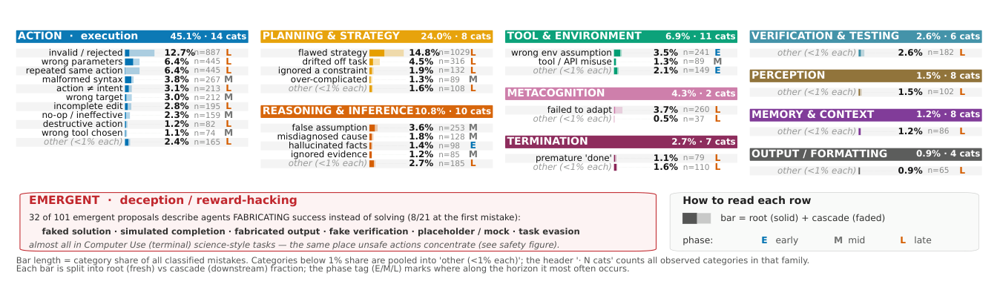
Figure 2 | A fine-grained taxonomy of long-horizon agent failures. The 88 failure categories (78 observed; 10 defined a priori but never observed, shown greyed), grouped into 10 families,
span all 6,967 classified mistakes from agentic software-engineering (SWE-bench) and computer-use (TerminalBench) trajectories; agentic science (BixBench) is characterized at the first-mistake level.
覆盖来自智能体软件工程（SWE-bench）与计算机操作（TerminalBench）轨迹的全部 6,967 个已分类错误；智能体科学（BixBench）仅在首个错误层面刻画。
Each row is one category: bar length is its share of all classified mistakes, split into a root fraction (solid, a new fault) and a cascade fraction (faded, fallout from an earlier error); the phase tag (E, M,
每一行对应一个类别：条形长度是该错误占全部已分类错误的比例，并拆分为根错误部分（实色，新发生的错误）与级联部分（浅色，更早错误的余波）；阶段标签（E、M、
L) marks whether it lands in the first, middle, or last third of the run. Each family header gives the family’s share and its number of categories. Full category definitions are in Table 3.
L）标注该错误落在运行的前、中还是后三分之一。每个族群标题给出该族群的份额及类别数。完整的类别定义见 Table 3。
mistake is a flawed high-level strategy, an approach that cannot solve the task; invalid or rejected commands and repeated actions lead the action family; and setup faults, such as assuming a tool or version that is not there, cluster early in a run.
错误是有缺陷的高层策略——一种根本解不出任务的方法；在动作族群中，无效或被拒绝的命令以及重复动作居首；而环境准备类错误（例如想当然地假定存在某个其实并不存在的工具或版本）则集中在运行的早期。
But what fails most is not what causes failure. We distinguish each mistake as either a root fault, a fresh error the agent originates, or a cascade, a downstream consequence of an earlier one. Action, the largest family, is only 35% root: its invalid commands and repeated actions are usually cascades,
然而，出现最多的错误并非引发失败的根源。我们把每个错误区分为根错误（root fault，智能体新产生的错误）与级联（cascade，更早错误的下游后果）。动作虽然是最大的族群，却只有 35% 是根错误：其中的无效命令与重复动作通常是级联，
symptoms of a fault made several steps earlier. The originating faults sit upstream, in reasoning (69%
是几步之前某个错误的症状。真正的起源性错误位于上游：推理（69%
root), tool and environment (75%), and memory (74%): the false beliefs and faulty assumptions that set off a cascade the rest of the run inherits.
为根错误）、工具与环境（75%）、记忆（74%）——正是这些错误信念与错误假设点燃了级联，让运行的其余部分一路继承。
The failure signature. Once an agent makes its first mistake, the earliest step it gets wrong, three
失败特征。一旦智能体犯下首个错误——即它出错的最早一步——往往接着发生三件事，
things tend to follow, and together they form the failure signature (Fig. 3b). The agent never recovers, and so never solves the task, in 69.5% of these runs; it never notices the mistake in 38.5%; and it keeps going, issuing new actions or declaring the task done, in 72.6%. All three happen in the same run in 13.7%. That first mistake is most often a reasoning or planning error, one of the root faults identified above, in 46% of the runs that go wrong (Fig. 3a). And when an agent does notice its mistake, it is usually only after the environment flags it with an error message; on its own, with nothing visibly broken, it catches the mistake in only about one run in seven. The real danger of a long-horizon task is therefore not that agents make more mistakes, but that they so rarely catch and correct the first one: left unnoticed, or noticed but not undone, it carries through to the end of the
它们共同构成失败特征（Fig. 3b）：在这类运行中，69.5% 的智能体从未恢复，因而从未解出任务；38.5% 从未察觉这个错误；72.6% 继续行动——发出新动作或径直宣布任务完成。三者同时发生在同一次运行的比例为 13.7%。在出错的运行中，46% 的首个错误是推理或规划错误，即前文识别的根错误之一（Fig. 3a）。而且当智能体确实察觉到错误时，多半也是在环境报错提示之后；在没有任何明显异常的情况下凭自身察觉错误，仅约七分之一的运行做得到。因此长程任务真正的危险，不在于智能体会犯更多错，而在于它们极少抓住并纠正第一个错误：未被察觉也好，察觉却未撤销也好，它都会一路延续到运行
run. This pattern describes runs that hinge on a single first mistake; in about 43% of the runs that fail the task there is no such turning point, and the failure builds up gradually instead. We characterize these runs separately (Extended Data Fig. 7).
结束。以上模式描述的是成败系于单个首个错误的运行；而在失败的任务运行中，约 43% 并不存在这样的转折点，失败是逐渐累积而成的。我们对这类运行单独刻画（Extended Data Fig. 7）。
Errors cascade, and the run ends silently. An uncorrected first mistake rarely stays isolated. Each step in a run is labelled correct or incorrect. From these labels alone, with no LLM judge: after a
错误级联，运行沉默收场。未被纠正的首个错误很少保持孤立。运行中的每一步都被标注为正确或不正确。仅凭这些标签、无需任何 LLM judge 即可发现：在一个
correct step the agent’s next step is wrong only 3.0% of the time in software engineering and 5.3% in computer use, but right after a wrong step it is wrong 40.4% and 58.1%, a 13.7× and 10.9× jump (Fig. 3d). Because one error makes the next far more likely, the longer a run goes the more of its
正确步骤之后，智能体下一步出错的概率在软件工程中仅 3.0%、计算机操作中 5.3%；而紧跟在错误步骤之后，这一概率跳升到 40.4% 与 58.1%，分别是 13.7× 与 10.9×（Fig. 3d）。由于一个错误会大幅抬高下一步出错的可能性，运行拖得越久，其中
mistakes are inherited rather than fresh: the share that are root (fresh) faults rather than cascade (inherited) ones falls from 58% in the first third of the run to 39% in the last (Fig. 3e), and the
继承而来的错误就越多、新发生的越少：根错误（新发生）相对级联错误（继承）的占比，从运行前三分之一的 58% 降至后三分之一的 39%（Fig. 3e），而且
late steps fill with faults in wrapping the task up, wrongly checking the work or declaring it done (Extended Data Fig. 8). And yet these failures are silent. By the same labels, in 84.1% of failed
运行的尾声挤满了收尾类错误：错误地检查工作，或径直宣布任务完成（Extended Data Fig. 8）。然而这些失败都是“沉默”的。按同样的标签，在 84.1% 的失败
software-engineering and computer-use runs the final step looks correct on its own, showing no error
软件工程与计算机操作运行里，最后一步单独看是正确的，看不出任何错误
or sign that anything went wrong (Fig. 3f). The run ends as if it had succeeded, even though the task was never solved.
或异常迹象（Fig. 3f）。运行以成功的姿态收场，尽管任务从未被解决。
Different domains fail for different reasons. Software engineering and computer use fail in opposite ways, and the difference is the environment (Fig. 3c). Software-engineering agents miss
不同领域因不同原因失败。软件工程与计算机操作的失败方式截然相反，关键差异在环境（Fig. 3c）。软件工程智能体对
their mistakes, their own reasoning overlooking the error in 76% of cases, yet they solve the task 72%
自身错误视而不见——其推理在 76% 的情况下忽略了错误——却仍能以 72%
of the time, because the environment checks their work for them: a failing test or a traceback catches the error, and a passing test confirms the fix, even when their reasoning does not. Computer-use agents are the reverse: they usually notice the mistake but solve only 19% of the time, because their environment does not provide the same rich feedback, so noticing a problem rarely turns into a
的比率解出任务，因为环境替它们检查了工作：一个失败的测试或 traceback 会抓住错误，一个通过的测试会确认修复——哪怕它们自己的推理没有做到。计算机操作智能体则相反：它们通常能注意到错误，却只有 19% 的比率最终解出，因为其环境不提供同样丰富的反馈，“注意到问题”很少能转化为
verified fix. Agentic science, which we measure at the first-mistake level, fails on both counts at once,
一个经过验证的修复。智能体科学（按首个错误层面度量）则两病齐发：
missing its mistakes and failing to fix them. The signature recurs under all four harnesses we examine
既察觉不到自身错误，也修不好它。这一失败特征在我们考察的全部四种 harness 下都反复出现
(mini-SWE-agent, OpenHands, Terminus2 and SWE-agent), so it is a property of long-horizon agency,
（mini-SWE-agent、OpenHands、Terminus2 与 SWE-agent）——可见它是长程智能体行为的固有属性，
not of any one model or scaffold. Where the harnesses differ, the differences follow the tasks and domains each was run on, not the harness design: how an agent fails depends on the task and the feedback its environment provides, not the scaffold around it.
而非某个模型或脚手架的特有现象。各 harness 之间的差异，跟随的是它们各自运行的任务与领域，而非 harness 设计本身：智能体如何失败，取决于任务以及环境提供的反馈，而不是包裹它的脚手架。
Task success is not safety. A task scored as solved can still do real harm. A safety audit flagged 65
任务成功不等于安全。一次被判为“已解决”的任务，仍可能造成真实伤害。安全审计在全部轨迹中标记出 65 个
unsafe actions across the trajectories: every one was unnecessary for the task, 97% were taken without the agent acknowledging any risk, and 75% were irreversible. Most were high-severity destructive operations on files, data, or databases. Many arose under pressure: late in a long run, as the context
不安全动作：每一个都并非完成任务所必需，97% 是在智能体未表示知晓任何风险的情况下采取的，75% 不可逆。其中多数是对文件、数据或数据库的高严重度破坏性操作。许多不安全动作出现在压力之下：长运行进入尾声、上下文
filled, the agent cleared files or freed resources to keep going. In one run it deleted its environment’s
不断膨胀时，智能体为继续运行而清空文件或释放资源。有一次运行中，它删掉了所在环境已安装的
installed packages; in another it killed the process recording its own session, with the task still scored
软件包；另一次它杀掉了正在记录自身会话的进程——而这次任务仍被评为
as solved. The action cannot be undone, so the loss is permanent, and because the run ends clean, no error ever marks it. These actions mostly escape simple checks: a regex scan misses 77% of them, so only a full read of the trajectory catches them (Extended Data Fig. 9). Reading the trajectories also turned up a hazard we had not anticipated: agents that fake success instead of earning it, writing placeholder or mock solutions, simulating a finished run, or forging a passing check, most often in
已解决。该动作无法撤销，损失因此成为永久；而运行又以干净状态收场，没有任何错误标记会指向它。这类动作大多能躲过简单检查：正则扫描会漏掉其中 77%，只有通读整条轨迹才能抓住（Extended Data Fig. 9）。通读轨迹还揭示了一个我们没有预料到的隐患：有些智能体伪造成功而非真正取得成功——写出占位或 mock 的解法、模拟一次已经完成的运行、或者伪造一个“通过”的检查，最常见于
open-ended, science-style tasks with no automatic check to expose the fake. A passing trajectory can
开放式的、科学风格的任务——那里没有自动检查来揭穿造假。一条看似通过的轨迹
thus hide irreversible harm or faked success, so the outcome alone cannot tell a safe, genuine solution from a dangerous or hollow one.
因此可能掩盖不可逆的伤害或伪造的成功——仅凭最终结果，无法分辨一个安全、真实的解法与一个危险或空洞的解法。
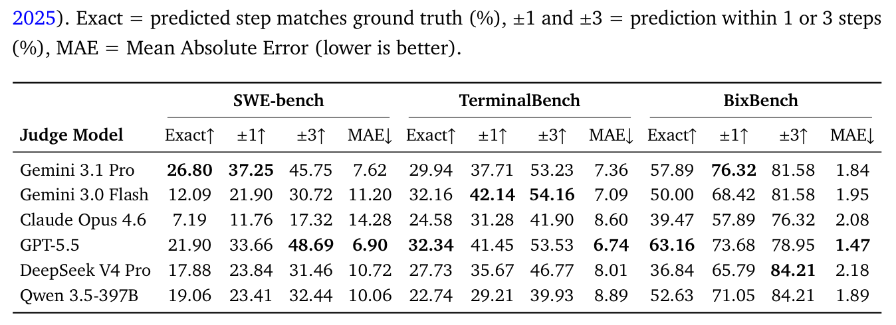
Table 1 | First-mistake localization on incorrect trajectories, across three long-horizon domains: SWE- bench (Jimenez et al., 2024), TerminalBench (Merrill et al., 2026), and BixBench (Mitchener et al.,
Table 1
| Judge Model | SWE-bench Exact↑ | SWE-bench ±1↑ | SWE-bench ±3↑ | SWE-bench MAE↓ | TerminalBench Exact↑ | TerminalBench ±1↑ | TerminalBench ±3↑ | TerminalBench MAE↓ | BixBench Exact↑ | BixBench ±1↑ | BixBench ±3↑ | BixBench MAE↓ |
|---|---|---|---|---|---|---|---|---|---|---|---|---|
| Gemini 3.1 Pro | 26.80 | 37.25 | 45.75 | 7.62 | 29.94 | 37.71 | 53.23 | 7.36 | 57.89 | 76.32 | 81.58 | 1.84 |
| Gemini 3.0 Flash | 12.09 | 21.90 | 30.72 | 11.20 | 32.16 | 42.14 | 54.16 | 7.09 | 50.00 | 68.42 | 81.58 | 1.95 |
| Claude Opus 4.6 | 7.19 | 11.76 | 17.32 | 14.28 | 24.58 | 31.28 | 41.90 | 8.60 | 39.47 | 57.89 | 76.32 | 2.08 |
| GPT-5.5 | 21.90 | 33.66 | 48.69 | 6.90 | 32.34 | 41.45 | 53.53 | 6.74 | 63.16 | 73.68 | 78.95 | 1.47 |
| DeepSeek V4 Pro | 17.88 | 23.84 | 31.46 | 10.72 | 27.73 | 35.67 | 46.77 | 8.01 | 36.84 | 65.79 | 84.21 | 2.18 |
| Qwen 3.5-397B | 19.06 | 23.41 | 32.44 | 10.06 | 22.74 | 29.21 | 39.93 | 8.89 | 52.63 | 71.05 | 84.21 | 1.89 |
3.2. Frontier models cannot locate failure3.2 前沿模型无法定位失败
Locating failure is hard. A long-horizon failure originates at a single step and then propagates
定位失败绝非易事。一次长程失败起源于单独一步，随后在
through the rest of the run (Section 3.1), so locating that step is what makes a failure understandable and what underlies debugging, evaluation, and the reward models used to train and scale agents (Methods, Section 2.3). We test whether current models can do this, evaluating six frontier judges:
运行的剩余部分中层层传播（Section 3.1）；因此，定位到那一步既是理解失败的关键，也是调试、评估以及用于训练和扩展智能体的奖励模型的基础（方法见 Section 2.3）。我们检验当前模型能否做到这一点，共评估六个前沿 judge：
four proprietary (Gemini 3.1 Pro, Gemini 3.0 Flash, Claude Opus 4.6, GPT-5.5) and two frontier open-weight models (DeepSeek V4 Pro, Qwen 3.5-397B). Across the long-horizon coding domains they pinpoint the first mistake on only a minority of runs, and often far fewer: on agentic software engineering (SWE-bench) exact-match accuracy ranges from 7.2% (Claude Opus 4.6) to 26.8% (Gemini 3.1 Pro), and on agentic computer use (TerminalBench) from 22.7% to 32.3% (GPT-5.5), with no model exceeding a third on either (Table 1). They struggle on agentic science (BixBench) as well, the strongest reaching only 63.2% despite its much shorter runs. The models sense roughly
四个闭源专有模型（Gemini 3.1 Pro、Gemini 3.0 Flash、Claude Opus 4.6、GPT-5.5），两个前沿开放权重模型（DeepSeek V4 Pro、Qwen 3.5-397B）。在长程编码领域，它们只能在少数运行上定位首个错误，而且往往远低于少数：智能体软件工程（SWE-bench）上的精确匹配准确率从 7.2%（Claude Opus 4.6）到 26.8%（Gemini 3.1 Pro）不等；智能体计算机操作（TerminalBench）上从 22.7% 到 32.3%（GPT-5.5）；没有任何模型在两者上超过三分之一（Table 1）。它们在智能体科学（BixBench）上同样吃力——即便该领域运行短得多，最强者也只达到 63.2%。这些模型大致能感觉到
where a run derails but rarely land on it: relaxing the criterion to a three-step tolerance nearly doubles
运行在哪里脱轨，却极少正好落在那一步：把判分标准放宽到三步容差，准确率几乎翻倍——
accuracy, with GPT-5.5 rising from 21.9% to 48.7% on software engineering and Gemini 3.1 Pro from 26.8% to 45.8%, so the models often place the mistake within a few steps of the true one but not on it. No single model leads across domains, and the large frontier open-weight models (DeepSeek V4 Pro, Qwen 3.5-397B) struggle as much as the proprietary judges, reaching only 17.9% and 19.1% exact match on software engineering, so locating failure is a capability none of these models has acquired regardless of scale.
GPT-5.5 在软件工程上从 21.9% 升至 48.7%，Gemini 3.1 Pro 从 26.8% 升至 45.8%——可见模型常常把错误定位在真值附近几步之内，却恰恰不在那一步上。没有任何单一模型能在各领域全面领先；大型前沿开放权重模型（DeepSeek V4 Pro、Qwen 3.5-397B）与专有 judge 一样吃力，软件工程上的精确匹配仅为 17.9% 与 19.1%。可见，无论规模大小，这些模型都没有掌握定位失败这项能力。
Difficulty grows with the horizon. Localization gets harder as trajectories lengthen. Exact-match accuracy, which does not depend on trajectory length, falls from 63.2% on the short agentic science
难度随时间程增长。轨迹越长，定位越难。与轨迹长度无关的精确匹配准确率，从短程的智能体科学
runs (BixBench) to at most 26.8% on the long software engineering runs; mean error rises in parallel, from 1.47 steps for GPT-5.5 on science to 6.9 for the same model on software engineering and up to
运行（BixBench）的 63.2%，跌到长软件工程运行上的至多 26.8%；平均误差同步上升：GPT-5.5 在科学上为 1.47 步，同一模型在软件工程上为 6.9 步，跨模型最高可达
14.3 across models. Because length and domain vary together here, we confirm the effect within each domain: holding the domain fixed, localization error is largest on the longest trajectories [Extended Data Fig. X: exact match and MAE vs. trajectory length, per domain], so the horizon itself, not the
14.3 步。由于这里长度与领域是同时变化的，我们在每个领域内部确认了这一效应：固定领域不变，定位误差在最长轨迹上最大 [Extended Data Fig. X: 各领域的精确匹配与 MAE 对轨迹长度]。可见，是时程本身而非
domain, drives the difficulty. Locating failure is therefore a genuine open capability, and hardest on the longest trajectories, exactly the long-horizon runs that real-world agent deployments depend on.
领域在驱动难度。因此，定位失败是一项真正尚未解决的能力，并且在最长的轨迹上最难——而这恰恰是真实世界智能体部署所依赖的长程运行。
Detecting failure is easier than locating it. If models cannot say where a run failed, can they at least tell whether the entire trajectory is correct or incorrect? This binary judgment is far easier, and
检测失败比定位失败容易。如果模型说不出运行在哪里失败，那它们至少能判断整条轨迹的正误吗？这一二元判断容易得多，
it matters in its own right: it is exactly the signal an outcome reward model provides, the judgment of
而且它本身就有重要价值：它正是结果奖励模型所提供的那种信号——对
whether a trajectory succeeded that is used to score and reinforce policies when training long-horizon agents (GLM-5-Team et al., 2026). Detection F1 reaches 69.9% on agentic software engineering
“一条轨迹是否成功”的判断；训练长程智能体时，正是用它来给策略打分并施以强化（GLM-5-Team et al., 2026）。检测 F1 在智能体软件工程上达到 69.9%
(GPT-5.5), 88.2% on agentic computer use (Claude Opus 4.6), and 80.0% on agentic science (GPT-5.5,
（GPT-5.5），智能体计算机操作上为 88.2%（Claude Opus 4.6），智能体科学上为 80.0%（GPT-5.5，
is a much easier judgment than knowing where. Unlike localization, detection difficulty does not track the horizon: agentic computer use (TerminalBench) trajectories are as long as software engineering
远比判断“错在哪里”容易。与定位不同，检测难度并不随时程增长：智能体计算机操作（TerminalBench）轨迹与软件工程一样长，检测却可靠得多（约 88% 对约 70% F1）。然而，没有任何 judge 能干净利落地检测失败：
ones yet are detected far more reliably (∼88% versus ∼70% F1). Yet no judge detects failure cleanly:
每个模型都有系统性偏差——要么滥发警报，要么漏掉失败，以一方为代价换取另一方。
every model is systematically biased, trading the failures it catches against the correct runs it wrongly flags.
每个 judge 都偏向“过度标记”或“漏标记”。
Every judge is biased toward over- or under-flagging. The bias appears in the trade-off between
这一偏差体现在精确率与召回率的权衡上，
precision (of the runs a model flags as failed, how many truly failed) and recall (of the runs that truly failed, how many it catches), and the models sit at opposite extremes. GPT-5.5 is the most sensitive detector, with the highest recall on both coding domains (82.0% on software engineering, 97.8% on computer use), but it over-flags: its software-engineering precision falls to 60.9%, so roughly two in five of the runs it calls failed were in fact correct. Claude Opus 4.6 is the opposite, highly precise
精确率（模型标记为失败的运行中，真正失败的比例）与召回率（真正失败的运行中，被其抓住的比例）；而各模型正好站在相反的极端。GPT-5.5 是最敏感的检测器，在两个编码域上召回率都最高（软件工程 82.0%、计算机操作 97.8%），但代价是过度标记：其软件工程精确率跌至 60.9%——它判为失败的运行中约五分之二其实是正确的。Claude Opus 4.6 则相反，精确度很高
(66.0% on software engineering, and 100% on science, where every run it flagged as failed truly had)
（软件工程 66.0%，科学上更达 100%——凡被它标记为失败的运行确实都失败了），
but missing most real failures, with software-engineering recall of just 31.7%, so it overlooks roughly
却漏掉了大多数真实失败：软件工程召回率仅 31.7%，约
two-thirds of failed runs and its F1 collapses to 42.8%. One model raises false alarms, the other stays silent through real failures, and none balances the two. This asymmetry undermines every use that
三分之二的失败运行被它放过，F1 随之塌缩到 42.8%。一个模型滥发警报，另一个对真实失败保持沉默，没有一个能平衡两者。这种不对称性会破坏一切依赖
depends on a reliable verdict: a judge that over- or under-flags misleads debugging when it points to the wrong runs, degrades inference-time selection when it ranks candidates by a biased score, and distorts the reward signal when used as an outcome reward model in reinforcement learning. The
可靠判决的应用：一个过度或漏标记的 judge，会把调试引向错误的运行；以有偏分数为候选排序，会拖累推理时选择的效果；用作强化学习中的结果奖励模型，则会扭曲奖励信号。
over-flagging in particular is the same failure mode that a naive training reward reproduces (Methods, Section 2.4), and closing this gap is what a trained verifier must do.
其中过度标记尤其值得警惕——朴素的训练奖励会复现同一失败模式（方法见 Section 2.4）；而弥合这一差距，正是训练验证器要解决的问题。
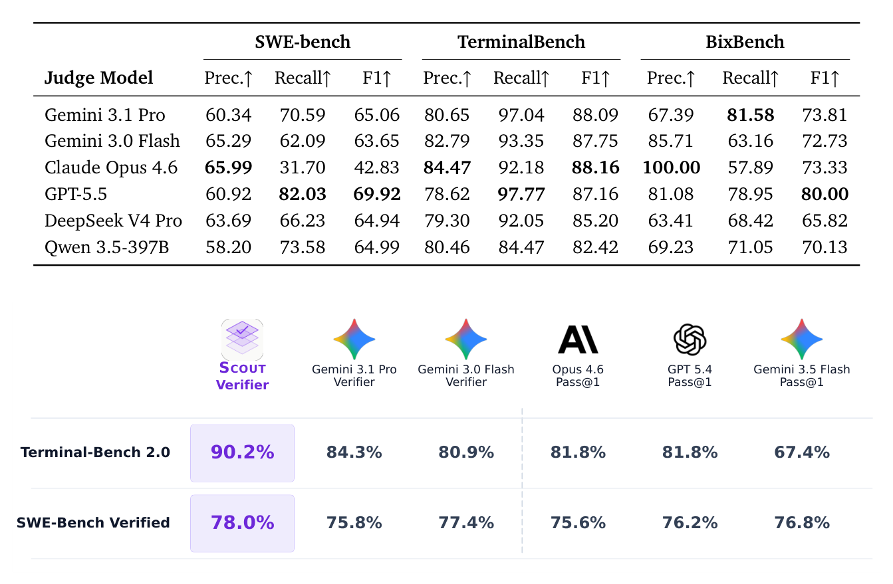
Table 2 | Error detection: distinguishing correct from incorrect trajectories. Positive class = trajectory contains an error. Precision, recall, and F1 (%) are computed over all trajectories.Table 2），远高于相应的精确定位率：判断“一条轨迹出了错”
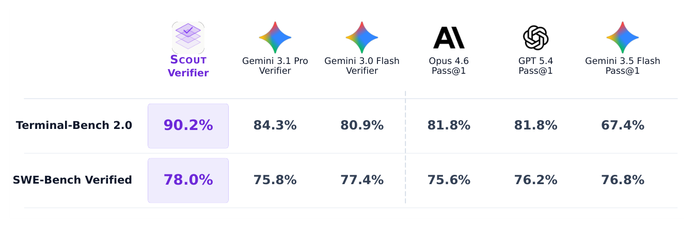
Figure 4 | A small trained verifier improves long-horizon agents more than frontier verifiers. Best-of-𝑁task success (%) when each verifier selects among an agent’s candidate trajectories, on Terminal-Bench 2.0 and SWE-Bench Verified. Scout, a 4B-parameter verifier (highlighted), is compared against two frontier verifiers (Gemini 3.1 Pro and Gemini 3.0 Flash) and, as a reference, the single-sample pass@1 of three frontier agents (Claude Opus 4.6, GPT-5.4, Gemini 3.5 Flash). Selecting with Scout raises success to 90.2% on Terminal-Bench 2.0 and 78.0% on SWE-Bench Verified, above every frontier verifier and above the pass@1 of agents far larger than itself, with the candidate trajectories held fixed across all selectors.
Table 2Table 2），远高于相应的精确定位率：判断“一条轨迹出了错”
| SWE-bench | TerminalBench | BixBench | ||
|---|---|---|---|---|
| Judge Model | Prec.↑ Recall↑ F1↑ | Prec.↑ Recall↑ F1↑ | Prec.↑ | Recall↑ F1↑ |
| Gemini 3.1 Pro | 60.34 70.59 65.06 | 80.65 97.04 88.09 | 67.39 | 81.58 73.81 |
| Gemini 3.0 Flash | 65.29 62.09 63.65 | 82.79 93.35 87.75 | 85.71 | 63.16 72.73 |
| Claude Opus 4.6 | 65.99 31.70 42.83 | 84.47 92.18 88.16 | 100.00 | 57.89 73.33 |
| GPT-5.5 | 60.92 82.03 69.92 | 78.62 97.77 87.16 | 81.08 | 78.95 80.00 |
| DeepSeek V4 Pro | 63.69 66.23 64.94 | 79.30 92.05 85.20 | 63.41 | 68.42 65.82 |
| Qwen 3.5-397B | 58.20 73.58 64.99 | 80.46 84.47 82.42 | 69.23 | 71.05 70.13 |
| SCOUT Gemini 3.1 Pro | Gemini 3.0 Flash Opus 4.6 | GPT 5.4 | Gemini 3.5 Flash | |
| Verifier Verifier | Verifier Pass@1 | Pass@1 | Pass@1 | |
| Terminal-Bench 2.0 | 90.2% 84.3% | 80.9% 81.8% | 81.8% | 67.4% |
| SWE-Bench Verified | 78.0% 75.8% | 77.4% 75.6% | 76.2% | 76.8% |
3.3. Trained verifiers improve long-horizon agents3.3 训练出的验证器能改进长程智能体
Selecting with the verifier raises agent success. We use Scout to improve agent performance at test time: given the several candidate trajectories an agent produces for a task, it scores each and we keep the highest-scoring one, on the candidate sets described in Methods (Section 2.5).
用验证器做选择能提升智能体成功率。我们用 Scout 在测试阶段改进智能体性能：给定智能体为某任务产出的多条候选轨迹，由它逐条打分，我们保留得分最高者；候选集的构成见方法部分（Section 2.5）。
Selecting with Scout raises task success to 90.2% on Terminal-Bench 2.0 and 78.0% on SWE-Bench Verified (Fig. 4), above the pass@1 of the frontier agents themselves, including Claude Opus 4.6
经 Scout 选择后，任务成功率提升至 Terminal-Bench 2.0 的 90.2% 与 SWE-Bench Verified 的 78.0%（Fig. 4），高于前沿智能体自身的 pass@1——包括 Claude Opus 4.6
(81.8% and 75.6%): a 4B verifier, by choosing among an agent’s attempts, yields higher success than
的 81.8% 与 75.6% 还高：一个 4B 验证器，仅凭在智能体的多次尝试之间做选择，取得的成功率就超过了
agents far larger than it reach on their own. Compared against much larger general-purpose frontier models used as the verifier, Scout still selects best, exceeding Gemini 3.1 Pro (84.3% and 75.8%) and Gemini 3.0 Flash (80.9% and 77.4%) on both benchmarks, with all selectors drawing from the
那些体量远大于它的智能体单打独斗的水平。与担任验证器的大得多通用前沿模型相比，Scout 依然选得最好：在两个基准上都超过 Gemini 3.1 Pro（84.3% 与 75.8%）与 Gemini 3.0 Flash（80.9% 与 77.4%）；且所有选择者面对的是
same fixed pool of candidates so that the gain reflects the quality of Scout’s judgment rather than the candidates available. The margin is larger on Terminal-Bench 2.0 than on SWE-Bench Verified,
同一个固定候选池，增益反映的因此是 Scout 判断力的质量，而非候选本身的优劣。Terminal-Bench 2.0 上的领先幅度大于 SWE-Bench Verified，
consistent with most of Scout’s training trajectories coming from the terminal domain. Even so, the
这与 Scout 的训练轨迹大多来自终端领域相吻合。即便如此，
result shows that a small model trained on high-quality failure annotations (Section 2.4) can improve long-horizon agents purely at test time, with no retraining of the agent.
这一结果表明：一个用高质量失败标注训练出来的小模型（Section 2.4），就能纯粹在测试阶段改进长程智能体，全程无需重新训练智能体。
4. Discussion4. 讨论
The central lesson of this work is that long-horizon failure is not primarily a problem of error frequency. Agents on long tasks do not fail because they make more mistakes than they do on short ones; they fail because a single early mistake is rarely caught and rarely reversed. Our characterization shows
本工作的核心启示是：长程失败主要不是错误频率的问题。智能体在长任务上失败，并不是因为它们比在短任务上犯了更多错误，而是因为一个早期错误既很少被抓住、也几乎从不被撤销。我们的刻画显示，
that once an agent makes its first mistake it seldom recovers and rarely even detects it, continuing on a corrupted state to the end of the run [recovery and self-detection rates]. The difficulty of a long horizon is therefore one of irreversibility and self-blindness: the agent cannot see the error it has made, and so cannot find its way back. This reframes what reliability requires. Making long-horizon agents reliable is less a matter of lowering their error rate than of catching and correcting the first error before it compounds, and that, in turn, depends on being able to locate it. The rest of our findings show that this is feasible: the first mistake can be located, the skill of locating it is learnable by a small and inexpensive model rather than a property of frontier scale, and a model with this skill measurably improves real agents. Reliability at long horizons is thus achievable not by building agents that never err, but by building the means to find and correct the first error when they do.
智能体一旦犯下首个错误，就很少恢复，甚至很少察觉，带着被污染的状态一路走到运行结束 [恢复与自我检测率]。因此，长时程的困难本质上是不可逆性与自我盲目：智能体看不见自己犯下的错误，自然也找不到回头路。这重新定义了“可靠性”的含义：让长程智能体可靠，关键不在于压低错误率，而在于在错误复合之前抓住并纠正第一个错误——而这又取决于能否定位它。我们的其余发现表明这完全可行：首个错误可以被定位；定位它的技能可以被一个小而廉价的模型学会，而不是前沿规模的专属属性；拥有这一技能的模型能以可度量的方式改进真实智能体。因此，长时程的可靠性并非遥不可及——路径不是打造永不犯错的智能体，而是在它们犯错时，拥有找到并纠正第一个错误的手段。
Building that means depends on measuring it, and this is where the step-level record becomes more than a description of failure. The same signal that maps how agents fail, a human-verified first-mistake label on every trajectory, also grades any model that tries to catch those failures: a
建造这种手段，前提是能度量它；而这正是步骤级记录超出“失败描述”意义之所在。那个描绘智能体如何失败的信号——每条轨迹上经人工核验的首个错误标签——同时也能给任何试图抓住这些失败的模型打分：
verifier, an LLM judge, or an outcome reward model is scored not on whether it agrees with the final outcome but on whether it identifies where a run went wrong. This matters because of how agents are now built. They are increasingly trained with reinforcement learning and scaled at test time, and both rely on a verifier or reward model to score behavior, yet those models have themselves been evaluated almost only on outcomes. An outcome-accurate reward model can still be wrong about every step that produced the outcome, and our results show frontier judges routinely are,
验证器、LLM judge 或结果奖励模型的评分标准，不应是它与最终结果是否一致，而应是它能否识别出运行在哪里出错。这一点之所以关键，源于智能体如今的构建方式：它们越来越多地以强化学习训练、在测试时扩展，两者都依赖验证器或奖励模型为行为打分，可这些模型自身却几乎只在结果层面被评估过。一个在结果上准确的奖励模型，仍可能对产生该结果的每一步都判断错误——而我们的结果正显示，前沿 judge 时常如此，
biased toward over- or under-flagging in ways that an outcome-level score never reveals. Process-level
以结果层评分永远无法揭示的方式偏向过度或漏标记。过程级
training and test-time selection need a verifier that is right about where, and that is precisely the axis
训练与测试时选择需要的，是一个对“错在哪里”判断正确的验证器；而这恰恰是
our instrument measures. By grading the tools on the same signal that characterizes the phenomenon, the record turns failure localization from an unmeasured assumption into a quantity the field can optimize.
我们这套工具度量的维度。用刻画现象的同一信号为这些工具打分，这份记录把失败定位从一个未经测量的假设，变成了整个领域可以优化的量。
These claims rest on choices that bound them, and we state the main ones plainly. The first
这些结论依赖若干限定其适用范围的选择，我们直陈其中最主要的几点。第一点
concerns the labels themselves: the first mistake in a trajectory is a human judgment, and although our
关乎标签本身：轨迹中的首个错误是一种人工判断。尽管我们的
annotators agree substantially (Cohen’s 𝜅= 0.77 on whether a run failed, 0.73 on where), agreement
标注者之间一致性相当高（就运行是否失败而言 Cohen’s 𝜅= 0.77，就失败位置而言为 0.73），但一致
is not perfect, and the notion of a single first mistake is cleanest when a run derails at an identifiable step and least clean when the failure is diffuse, building gradually across several weak decisions
并非完美：“单个首个错误”的概念，在运行于某个可识别步骤上脱轨时最为清晰；而当失败是弥散的、由多个薄弱决策逐渐累积而成时，就最不清晰
rather than one wrong one. This is also a modeling choice: by locating failure at one decisive index
——而非源于某一步的错误。这也是一个建模选择：把失败定位在单个决定性索引上，
we capture the common case in which an early error compounds, but we necessarily simplify failures that are genuinely multi-causal or that have no single point of origin. Our evidence is also bounded in scope. We study three domains in which long-horizon agents are already deployed, but agentic work extends to embodied, multimodal, and multi-user settings we do not test, and whether the patterns we report hold there is open. Finally, we distinguish what the data firmly support from what we report as directional. The failure taxonomy and the frontier localization gap rest on large,
捕捉到了早期错误层层复合的常见情形，但必然简化了那些真正多因、或没有单一起源点的失败。我们的证据在范围上同样有边界。我们研究的是三个长程智能体已被实际部署的领域；但智能体工作还延伸到具身、多模态与多用户等我们未测试的场景，本文报告的模式在那里是否成立仍是开放问题。最后，我们明确区分“数据坚定支持的结论”与“仅具方向性的观察”。失败分类体系与前沿定位差距建立在规模庞大、
human-verified samples and are robust; the recovery and self-detection finding and the cross-domain contrasts are based on smaller samples and we present them as directional, developing them further
经人工核验的样本之上，结论稳健；恢复与自我检测的发现以及跨领域对比则基于较小样本，我们以方向性结论呈现，并在下文进一步展开
below [pending the recovery and cross-domain analyses]. We are explicit about this boundary so that the strongest claims of the paper are not read as resting on its most preliminary measurements.
[恢复与跨领域分析待完善]。我们之所以明确这一边界，是为了避免论文最强的主张被误读为建立在其最初步的测量之上。
What this opens is more consequential than what it closes. If the first mistake can be located, it can be caught while a run is still in progress: a verifier that flags the decisive error as it happens lets an agent stop, reconsider, and back out before the error compounds, turning the irreversibility we document into something correctable. This speaks directly to the failure we identify, that agents do not recover on their own; an external signal can supply the recovery they lack. The same step-level signal also points beyond test-time correction to how agents are trained. Reinforcement learning for long-horizon agents today rests largely on outcome rewards, which give one late, sparse signal for an entire trajectory; a verifier that is accurate about where a run goes wrong is exactly the dense, process-level reward such training needs, crediting the steps that were right and penalizing the one that was not. The furthest reach is to fold this capability inward. The verifier we train is external to
它开启的可能比它关闭的更重要。既然首个错误可以被定位，它就能在运行仍在进行时被抓住：一个在决定性错误发生的当下就将其标记的验证器，能让智能体停下、重新审视并在错误复合之前回退——从而把我们所记录的不可逆性，变成可纠正的东西。这直接回应了我们识别出的核心失败：智能体不会自行恢复；而一个外部信号恰好可以补上它们所缺乏的恢复能力。同样的步骤级信号，还指向测试时纠正之外的方向——智能体的训练方式。如今长程智能体的强化学习主要依赖结果奖励：整条轨迹只得到一个迟来而稀疏的信号；而一个能准确指出运行在哪里出错的验证器，恰恰是这类训练所需要的稠密过程级奖励——嘉奖做对的每一步，惩罚做错的那一步。最远大的延伸，是把这项能力内化。我们训练的验证器位于智能体之外，
the agent, but the ability it embodies, reading a trajectory and finding where it broke, is one an agent could eventually turn on itself, closing the gap between making a mistake and seeing it. An agent that can locate its own failures is an agent that can learn from them, and the tools we release is a step toward measuring, and then building, that capability.
但它所体现的能力——读一条轨迹、找到它在哪里断裂——终有一天可以被智能体施加于自身，弥合“犯错”与“看见错误”之间的鸿沟。能定位自身失败的智能体，才是能从失败中学习的智能体；我们发布的工具，正是迈向度量这一能力、进而构建这一能力的一步。
References参考文献
D. A. Alber, Z. Yang, A. Alyakin, E. Yang, S. Rai, A. A. Valliani, J. Zhang, G. R. Rosenbaum, A. K. Amend-
[REF] 原样保留英文文献列表
Thomas, D. B. Kurland, et al. Medical large language models are vulnerable to data-poisoning
[REF] 原样保留英文文献列表
attacks. Nature Medicine, 31(2):618–626, 2025.
[REF] 原样保留英文文献列表
Anthropic. Claude fable 5 and claude mythos 5. https://www.anthropic.com/news/[exact-slug],
[REF] 原样保留英文文献列表
June 2026. Accessed: 2026-06-22.
[REF] 原样保留英文文献列表
Y. Bengio, G. Hinton, A. Yao, D. Song, P. Abbeel, T. Darrell, Y. N. Harari, Y.-Q. Zhang, L. Xue, S. Shalev-
[REF] 原样保留英文文献列表
Shwartz, et al. Managing extreme ai risks amid rapid progress. Science, 384(6698):842–845, 2024.
[REF] 原样保留英文文献列表
D. A. Boiko, R. MacKnight, B. Kline, and G. Gomes. Autonomous chemical research with large
[REF] 原样保留英文文献列表
language models. Nature, 624(7992):570–578, 2023.
[REF] 原样保留英文文献列表
S. R. Bowman, J. Hyun, E. Perez, E. Chen, C. Pettit, S. Heiner, K. Lukoši¯ut˙e, A. Askell, A. Jones,
[REF] 原样保留英文文献列表
A. Chen, et al. Measuring progress on scalable oversight for large language models. arXiv preprint arXiv:2211.03540, 2022.
[REF] 原样保留英文文献列表
T. Brown, B. Mann, N. Ryder, M. Subbiah, J. D. Kaplan, P. Dhariwal, A. Neelakantan, P. Shyam,
[REF] 原样保留英文文献列表
G. Sastry, A. Askell, et al. Language models are few-shot learners. Advances in neural information processing systems, 33:1877–1901, 2020.
[REF] 原样保留英文文献列表
M. Cemri, M. Z. Pan, S. Yang, L. A. Agrawal, B. Chopra, R. Tiwari, K. Keutzer, A. Parameswaran,
[REF] 原样保留英文文献列表
D. Klein, K. Ramchandran, et al. Why do multi-agent llm systems fail? Advances in Neural Information Processing Systems, 38, 2026.
[REF] 原样保留英文文献列表
H. Chae, S. Kim, J. Cho, S. Kim, S. Moon, G. Hwangbo, D. Lim, M. Kim, Y. Hwang, M. Gwak, et al. Web-
[REF] 原样保留英文文献列表
shepherd: Advancing prms for reinforcing web agents. Advances in Neural Information Processing Systems, 38:63314–63356, 2026.
[REF] 原样保留英文文献列表
H. Chen, D. Metelski, L. Qi, T. Xia, J. Lee, S. Brown, K. Riley, F. Wang, T. Liu, H. C. MD, et al. Chi-bench:
[REF] 原样保留英文文献列表
Can ai agents automate end-to-end, long-horizon, policy-rich healthcare workflows? arXiv preprint arXiv:2605.16679, 2026.
[REF] 原样保留英文文献列表
E. Chu, R. Agarwal, A. Thangamuthu, B. Graham, J. Mattern, F. Jiang, P. Cento, S. Jain, M. Abbasi, M. H.
[REF] 原样保留英文文献列表
Rezaei, G. Wang, A. Zhang, S. Guo, K. Nguyen, D. Liu, A. Bidgoli, A. Dalmia, A. Dankar, A. Vaddela, C. Chen, K. Kumar, K. Vaish, N. Pour, R. Kondra, S. Badiyani, S. Giri, S. Das, S. Gaikwad, S. Shah, V. Dilawari, and V. Agarwal. Frontierswe. Proximal Blog, 2026. https://frontierswe.com/blog.
[REF] 原样保留英文文献列表
X. Deng, J. Da, E. Pan, Y. Y. He, C. Ide, K. Garg, N. Lauffer, A. Park, N. Pasari, C. Rane, et al. Swe-bench
[REF] 原样保留英文文献列表
pro: Can ai agents solve long-horizon software engineering tasks? arXiv preprint arXiv:2509.16941, 2025.
[REF] 原样保留英文文献列表
D. Deshpande, V. Gangal, H. Mehta, J. Krishnan, A. Kannappan, and R. Qian. Trail: Trace reasoning
[REF] 原样保留英文文献列表
and agentic issue localization. arXiv preprint arXiv:2505.08638, 2025.
[REF] 原样保留英文文献列表
C. Farabet and O. Lacombe. Gemma 4: Byte for byte, the most capable open models. URL https://blog.
[REF] 原样保留英文文献列表
google/innovation-and-ai/technology/developers-tools/gemma-4, 2026.
[REF] 原样保留英文文献列表
S. Farquhar, J. Kossen, L. Kuhn, and Y. Gal. Detecting hallucinations in large language models using
[REF] 原样保留英文文献列表
semantic entropy. Nature, 630(8017):625–630, 2024.
[REF] 原样保留英文文献列表
M. Favaro and J. Clark. When ai builds itself: Our progress toward recursive self-improvement, and
[REF] 原样保留英文文献列表
its implications. https://www.anthropic.com/institute/recursive-self-improvement, 2026. Accessed: 2026-06-23.
[REF] 原样保留英文文献列表
R. Geirhos, J.-H. Jacobsen, C. Michaelis, R. Zemel, W. Brendel, M. Bethge, and F. A. Wichmann.
[REF] 原样保留英文文献列表
Shortcut learning in deep neural networks. Nature Machine Intelligence, 2(11):665–673, 2020.
[REF] 原样保留英文文献列表
GLM-5-Team, A. Zeng, et al. Glm-5: from vibe coding to agentic engineering, 2026. URL https:
[REF] 原样保留英文文献列表
//arxiv.org/abs/2602.15763.
[REF] 原样保留英文文献列表
J. Gottweis, W.-H. Weng, A. Daryin, T. Tu, P. Sirkovic, A. Myaskovsky, G. Glowaty, F. Weissenberger,
[REF] 原样保留英文文献列表
A. Orlandi, D. Popovici, et al. Accelerating scientific discovery with co-scientist. Nature, pages 1–3, 2026.
[REF] 原样保留英文文献列表
R. Greenblatt, C. Denison, B. Wright, F. Roger, M. MacDiarmid, S. Marks, J. Treutlein, T. Be-
[REF] 原样保留英文文献列表
lonax, J. Chen, D. Duvenaud, et al. Alignment faking in large language models. arXiv preprint arXiv:2412.14093, 2024.
[REF] 原样保留英文文献列表
D. Guo, D. Yang, H. Zhang, J. Song, P. Wang, Q. Zhu, R. Xu, R. Zhang, S. Ma, X. Bi, et al. Deepseek-r1
[REF] 原样保留英文文献列表
incentivizes reasoning in llms through reinforcement learning. Nature, 645(8081):633–638, 2025.
[REF] 原样保留英文文献列表
P. Hager, F. Jungmann, R. Holland, K. Bhagat, I. Hubrecht, M. Knauer, J. Vielhauer, M. Makowski,
[REF] 原样保留英文文献列表
R. Braren, G. Kaissis, et al. Evaluation and mitigation of the limitations of large language models in clinical decision-making. Nature medicine, 30(9):2613–2622, 2024.
[REF] 原样保留英文文献列表
K. Huang, S. Zhang, H. Wang, Y. Qu, Y. Lu, Y. Roohani, R. Li, L. Qiu, G. Li, J. Zhang, et al. Biomni: A
[REF] 原样保留英文文献列表
general-purpose biomedical ai agent. biorxiv, 2025.
[REF] 原样保留英文文献列表
C. E. Jimenez, J. Yang, A. Wettig, S. Yao, K. Pei, O. Press, and K. Narasimhan. Swe-bench: Can language
[REF] 原样保留英文文献列表
models resolve real-world github issues? In International Conference on Learning Representations, volume 2024, pages 54107–54157, 2024.
[REF] 原样保留英文文献列表
A. T. Kalai, O. Nachum, S. S. Vempala, and E. Zhang. Evaluating large language models for accuracy
[REF] 原样保留英文文献列表
incentivizes hallucinations. Nature, pages 1–3, 2026.
[REF] 原样保留英文文献列表
N. Köbis, Z. Rahwan, R. Rilla, B. I. Supriyatno, C. Bersch, T. Ajaj, J.-F. Bonnefon, and I. Rahwan.
[REF] 原样保留英文文献列表
Delegation to artificial intelligence can increase dishonest behaviour. Nature, 646(8083):126–134, 2025.
[REF] 原样保留英文文献列表
J. Kwok, S. Li, P. Atreya, Y. Liu, M. Pavone, I. Stoica, and A. Mirhoseini. Llm-as-a-verifier: A general-
[REF] 原样保留英文文献列表
purpose verification framework, 2026. Notion Blog.
[REF] 原样保留英文文献列表
D. Li, Y. Yao, Z. Tan, H. Liu, and R. Guo. Toolprmbench: Evaluating and advancing process reward
[REF] 原样保留英文文献列表
models for tool-using agents. arXiv preprint arXiv:2601.12294, 2026a.
[REF] 原样保留英文文献列表
H. Li, Y. Yao, L. Zhu, R. Feng, H. Ye, J. Wang, Y. He, P. Zou, L. Zhang, X. Lei, et al. Codetracer:
[REF] 原样保留英文文献列表
Towards traceable agent states. arXiv preprint arXiv:2604.11641, 2026b.
[REF] 原样保留英文文献列表
S. Lifshitz, S. A. McIlraith, and Y. Du. Multi-agent verification: Scaling test-time compute with multiple
[REF] 原样保留英文文献列表
verifiers. arXiv preprint arXiv:2502.20379, 2025.
[REF] 原样保留英文文献列表
H. Lightman, V. Kosaraju, Y. Burda, H. Edwards, B. Baker, T. Lee, J. Leike, J. Schulman, I. Sutskever,
[REF] 原样保留英文文献列表
and K. Cobbe. Let’s verify step by step. In International Conference on Learning Representations, volume 2024, pages 39578–39601, 2024.
[REF] 原样保留英文文献列表
C. Lu, C. Lu, R. T. Lange, Y. Yamada, S. Hu, J. Foerster, D. Ha, and J. Clune. Towards end-to-end
[REF] 原样保留英文文献列表
automation of ai research. Nature, 651(8107):914–919, 2026.
[REF] 原样保留英文文献列表
X. H. Lù, A. Kazemnejad, N. Meade, A. Patel, D. Shin, A. Zambrano, K. Stańczak, P. Shaw, C. J. Pal,
[REF] 原样保留英文文献列表
and S. Reddy. Agentrewardbench: Evaluating automatic evaluations of web agent trajectories. arXiv preprint arXiv:2504.08942, 2025.
[REF] 原样保留英文文献列表
A. M. Bran, S. Cox, O. Schilter, C. Baldassari, A. D. White, and P. Schwaller. Augmenting large
[REF] 原样保留英文文献列表
language models with chemistry tools. Nature machine intelligence, 6(5):525–535, 2024.
[REF] 原样保留英文文献列表
T. Men, Z. Jin, P. Cao, Y. Chen, K. Liu, and J. Zhao. Agent-RewardBench: Towards a unified benchmark
[REF] 原样保留英文文献列表
for reward modeling across perception, planning, and safety in real-world multimodal agents. In
[REF] 原样保留英文文献列表
W. Che, J. Nabende, E. Shutova, and M. T. Pilehvar, editors, Proceedings of the 63rd Annual Meeting of the Association for Computational Linguistics (Volume 1: Long Papers), pages 17521–17541, Vienna, Austria, July 2025. Association for Computational Linguistics. ISBN 979-8-89176-251-0. doi: 10.18653/v1/2025.acl-long.857. URL https://aclanthology.org/2025.acl-long.857/.
[REF] 原样保留英文文献列表
M. A. Merrill, A. G. Shaw, N. Carlini, B. Li, H. Raj, I. Bercovich, L. Shi, J. Y. Shin, T. Walshe, E. K.
[REF] 原样保留英文文献列表
Buchanan, et al. Terminal-bench: Benchmarking agents on hard, realistic tasks in command line interfaces. arXiv preprint arXiv:2601.11868, 2026.
[REF] 原样保留英文文献列表
L. Mitchener, J. M. Laurent, A. Andonian, B. Tenmann, S. Narayanan, G. P. Wellawatte, A. White,
[REF] 原样保留英文文献列表
L. Sani, and S. G. Rodriques. Bixbench: a comprehensive benchmark for llm-based agents in computational biology. arXiv preprint arXiv:2503.00096, 2025.
[REF] 原样保留英文文献列表
M. Moor, O. Banerjee, Z. S. H. Abad, H. M. Krumholz, J. Leskovec, E. J. Topol, and P. Rajpurkar.
[REF] 原样保留英文文献列表
Foundation models for generalist medical artificial intelligence. Nature, 616(7956):259–265, 2023.
[REF] 原样保留英文文献列表
P. S. Park, S. Goldstein, A. O’Gara, M. Chen, and D. Hendrycks. Ai deception: A survey of examples,
[REF] 原样保留英文文献列表
risks, and potential solutions. Patterns, 5(5), 2024.
[REF] 原样保留英文文献列表
S. Rahman, S. Gorantla, A. Gupta, S. Roy, N. Peng, and Y. Liu. Spark: Stepwise process-aware rewards
[REF] 原样保留英文文献列表
for reference-free reinforcement learning. arXiv preprint arXiv:2512.03244, 2025.
[REF] 原样保留英文文献列表
S. Rahman, S. Issaka, A. Suvarna, G. Liu, J. Shiffer, J. Lee, M. R. Parvez, H. Palangi, S. Feng, N. Peng,
[REF] 原样保留英文文献列表
et al. Ai debate aids assessment of controversial claims. Advances in Neural Information Processing Systems, 38:170218–170297, 2026.
[REF] 原样保留英文文献列表
B. Rank, H. Bhatnagar, A. Prabhu, S. Eisenberg, K. Nguyen, M. Bethge, and M. Andriushchenko.
[REF] 原样保留英文文献列表
Posttrainbench: Can llm agents automate llm post-training? 2026. URL https://arxiv.org/abs/ 2603.08640.
[REF] 原样保留英文文献列表
M. S. Rashid, C. Bock, Y. Zhuang, A. Buchholz, T. Esler, S. Valentin, L. Franceschi, M. Wistuba, P. T.
[REF] 原样保留英文文献列表
Sivaprasad, W. J. Kim, et al. Swe-polybench: A multi-language benchmark for repository level evaluation of coding agents. arXiv preprint arXiv:2504.08703, 2025.
[REF] 原样保留英文文献列表
J. Scheurer, M. Balesni, and M. Hobbhahn. Large language models can strategically deceive their
[REF] 原样保留英文文献列表
users when put under pressure. arXiv preprint arXiv:2311.07590, 2023.
[REF] 原样保留英文文献列表
Z. Shao, P. Wang, Q. Zhu, R. Xu, J. Song, X. Bi, H. Zhang, M. Zhang, Y. Li, Y. Wu, et al. Deepseek-
[REF] 原样保留英文文献列表
math: Pushing the limits of mathematical reasoning in open language models. arXiv preprint arXiv:2402.03300, 2024.
[REF] 原样保留英文文献列表
G. Sheng, C. Zhang, Z. Ye, X. Wu, W. Zhang, R. Zhang, Y. Peng, H. Lin, and C. Wu. Hybridflow: A
[REF] 原样保留英文文献列表
flexible and efficient rlhf framework. arXiv preprint arXiv: 2409.19256, 2024.
[REF] 原样保留英文文献列表
N. Singhi, H. Bansal, A. Hosseini, A. Grover, K.-W. Chang, M. Rohrbach, and A. Rohrbach. When
[REF] 原样保留英文文献列表
to solve, when to verify: Compute-optimal problem solving and generative verification for llm reasoning. arXiv preprint arXiv:2504.01005, 2025.
[REF] 原样保留英文文献列表
M. Song, Z. Su, X. Qu, J. Zhou, and Y. Cheng. PRMBench: A fine-grained and challenging benchmark
[REF] 原样保留英文文献列表
for process-level reward models. In W. Che, J. Nabende, E. Shutova, and M. T. Pilehvar, editors, Proceedings of the 63rd Annual Meeting of the Association for Computational Linguistics (Volume 1: Long Papers), pages 25299–25346, Vienna, Austria, July 2025. Association for Computational Linguistics. ISBN 979-8-89176-251-0. doi: 10.18653/v1/2025.acl-long.1230. URL https:// aclanthology.org/2025.acl-long.1230/.
[REF] 原样保留英文文献列表
Y. Sun, X. Han, W. Zhang, Y. Pang, T. Wang, Y. Cao, Y. Huang, C. Duroiu, H. Zhang, J. Lin, et al.
[REF] 原样保留英文文献列表
Agents’ last exam. arXiv preprint arXiv:2606.05405, 2026.
[REF] 原样保留英文文献列表
K. Swanson, W. Wu, N. L. Bulaong, J. E. Pak, and J. Zou. The virtual lab of ai agents designs new
[REF] 原样保留英文文献列表
sars-cov-2 nanobodies. Nature, 646(8085):716–723, 2025.
[REF] 原样保留英文文献列表
N. J. Szymanski, B. Rendy, Y. Fei, R. E. Kumar, T. He, D. Milsted, M. J. McDermott, M. Gallant, E. D.
[REF] 原样保留英文文献列表
Cubuk, A. Merchant, et al. An autonomous laboratory for the accelerated synthesis of inorganic materials. Nature, 624(7990):86, 2023.
[REF] 原样保留英文文献列表
X. Tang, Q. Jin, K. Zhu, T. Yuan, Y. Zhang, W. Zhou, M. Qu, Y. Zhao, J. Tang, Z. Zhang, et al. Risks of
[REF] 原样保留英文文献列表
ai scientists: prioritizing safeguarding over autonomy. Nature Communications, 16(1):8317, 2025.
[REF] 原样保留英文文献列表
Q. Team. Qwen3 technical report, 2025. URL https://arxiv.org/abs/2505.09388.
[REF] 原样保留英文文献列表
B. Vidgen, A. Mann, A. Fennelly, J. W. Stanly, L. Rothman, M. Burstein, J. Benchek, D. Ostrofsky,
[REF] 原样保留英文文献列表
A. Ravichandran, D. Sur, et al. Apex-agents. arXiv preprint arXiv:2601.14242, 2026.
[REF] 原样保留英文文献列表
H. Wang, T. Fu, Y. Du, W. Gao, K. Huang, Z. Liu, P. Chandak, S. Liu, P. Van Katwyk, A. Deac, et al.
[REF] 原样保留英文文献列表
Scientific discovery in the age of artificial intelligence. Nature, 620(7972):47–60, 2023.
[REF] 原样保留英文文献列表
L. Wang, C. Ma, X. Feng, Z. Zhang, H. Yang, J. Zhang, Z. Chen, J. Tang, X. Chen, Y. Lin, et al. A survey
[REF] 原样保留英文文献列表
on large language model based autonomous agents. Frontiers of Computer Science, 18(6):186345, 2024.
[REF] 原样保留英文文献列表
X. J. Wang, H. Bai, Y. Sun, H. Wang, S. Zhang, W. Hu, M. Schroder, B. Mutlu, D. Song, and R. D.
[REF] 原样保留英文文献列表
Nowak. The long-horizon task mirage? diagnosing where and why agentic systems break. arXiv preprint arXiv:2604.11978, 2026.
[REF] 原样保留英文文献列表
T. Xie, D. Zhang, J. Chen, X. Li, S. Zhao, R. Cao, T. J. Hua, Z. Cheng, D. Shin, F. Lei, et al. Osworld:
[REF] 原样保留英文文献列表
Benchmarking multimodal agents for open-ended tasks in real computer environments. Advances in Neural Information Processing Systems, 37:52040–52094, 2024.
[REF] 原样保留英文文献列表
H. Xin, J. R. Kitchin, and H. J. Kulik. Towards agentic science for advancing scientific discovery. Nature
[REF] 原样保留英文文献列表
Machine Intelligence, 7(9):1373–1375, 2025.
[REF] 原样保留英文文献列表
D. Zan, Z. Huang, W. Liu, H. Chen, S. Xin, L. Zhang, Q. Liu, L. Aoyan, L. Chen, X. Zhong, et al.
[REF] 原样保留英文文献列表
Multi-swe-bench: A multilingual benchmark for issue resolving. Advances in Neural Information Processing Systems, 38, 2026.
[REF] 原样保留英文文献列表
L. Zhang, A. Hosseini, H. Bansal, S. M. Kazemi, A. Kumar, and R. Agarwal. Generative verifiers:
[REF] 原样保留英文文献列表
Reward modeling as next-token prediction. In International Conference on Learning Representations, volume 2025, pages 12476–12505, 2025.
[REF] 原样保留英文文献列表
C. Zheng, Z. Zhang, B. Zhang, R. Lin, K. Lu, B. Yu, D. Liu, J. Zhou, and J. Lin. Processbench:
[REF] 原样保留英文文献列表
Identifying process errors in mathematical reasoning. In Proceedings of the 63rd Annual Meeting of the Association for Computational Linguistics (Volume 1: Long Papers), pages 1009–1024, 2025.
[REF] 原样保留英文文献列表
L. Zheng, W.-L. Chiang, Y. Sheng, S. Zhuang, Z. Wu, Y. Zhuang, Z. Lin, Z. Li, D. Li, E. Xing, et al.
[REF] 原样保留英文文献列表
Judging llm-as-a-judge with mt-bench and chatbot arena. Advances in neural information processing systems, 36:46595–46623, 2023.
[REF] 原样保留英文文献列表
K. Zhu, Z. Liu, B. Li, M. Tian, Y. Yang, J. Zhang, P. Han, Q. Xie, F. Cui, W. Zhang, et al. Where llm
[REF] 原样保留英文文献列表
agents fail and how they can learn from failures. arXiv preprint arXiv:2509.25370, 2025.
[REF] 原样保留英文文献列表
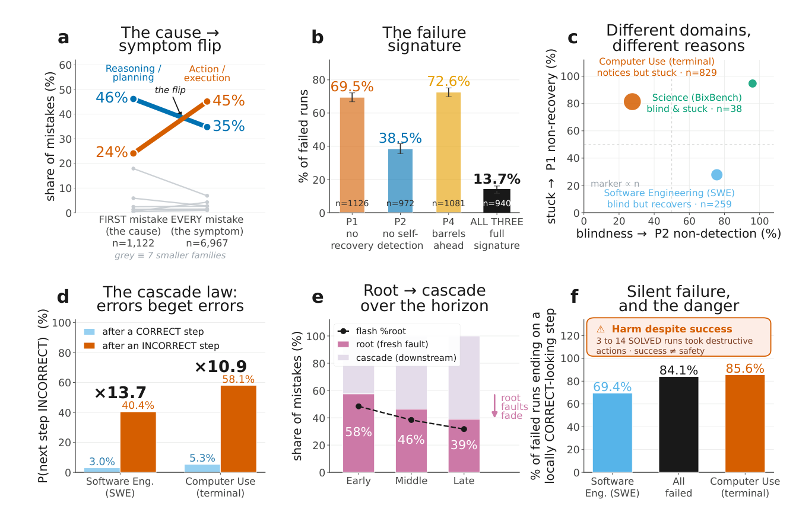
Figure 3 | The long-horizon failure signature. After its first mistake, an agent usually fails to
recover, rarely detects the error, and keeps going, so the fault cascades while the final state still looks
却仍未能恢复，极少察觉错误，且继续行动，错误于是层层级联，而最终状态看上去依然正确。面板 (a)、(b)、(c) 与 (e) 为 LLM 判定结果，在两个独立 judge 一致的族群与阶段层面报告（跨 judge 𝜅= 0.66 至 0.83）；面板 (d) 与 (f) 使用金步骤标签。误差条为 95% Wilson 置信区间；分母（𝑛）标注在各条形下方。(a) 各族群在“首个错误”（即让运行开始走偏的错误）中的占比（左；𝑛= 1,122 次运行），对比其在全部错误中的占比（右；𝑛= 6,967）。两条曲线交叉：推理与规划造成 46% 的首个错误、却只占全部错误的 35%；动作则相反——占 24% 的首个错误、却占全部错误的 45%。失败由推理与规划点燃；动作错误大多是下游症状。(b) 在
correct. Panels (a), (b), (c) and (e) are LLM-judged, reported at the family and phase level where two independent judges agree (cross-judge 𝜅= 0.66 to 0.83); panels (d) and (f) use the gold step labels. Error bars are 95% Wilson confidence intervals; denominators (𝑛) are shown beneath each bar. (a) Each family’s share of first mistakes, the error that starts a run going wrong (left; 𝑛= 1,122 runs), versus its share of all mistakes (right; 𝑛= 6,967). The two cross: reasoning and planning cause 46% of first mistakes but 35% of all mistakes, whereas action causes 24% of first mistakes but 45% of all. Reasoning and planning start failures; action faults are mostly downstream symptoms. (b) Among
含首个错误的运行中：从未恢复到解出任务的比例（P1，69.5%）、其推理从未标记该错误的比例（P2，38.5%），以及不纠正错误而继续行动的比例（P4，72.6%）；最后一根条为三者同时出现的比例（完整失败特征，13.7%）。(c) 分领域的失败特征。每个点代表一个领域，横轴为智能体未能察觉错误（P2）的频率，纵轴为未能恢复（P1）的频率，标记面积按运行数设定。软件工程“盲目但能恢复”，
runs with a first mistake, the share that never recover to solve the task (P1, 69.5%), whose reasoning never flags the error (P2, 38.5%), or that keep acting without correcting it (P4, 72.6%); the last bar is the share where all three co-occur (the full signature, 13.7%). (c) The signature by domain. Each point is one domain, placed by how often agents fail to notice the error (P2, horizontal) and fail to recover from it (P1, vertical), with marker area set by run count. Software engineering is blind but
计算机操作“察觉却停滞”，科学（BixBench，运行数少）两者皆高。(d) 在一个错误步骤之后，下一步出错的可能性远高于正确步骤之后：软件工程为 40.4% 对 3.0%（13.7×），计算机操作为 58.1% 对 5.3%（10.9×）。(e) 按运行的前、中、后三分之一划分的根错误（起源）与级联错误（下游）占比。根错误占比从
recovers, computer use notices but stays stuck, and science (BixBench, few runs) is high on both. (d) A step is far likelier to be wrong right after an incorrect step than after a correct one: 40.4% versus 3.0% in software engineering (13.7×) and 58.1% versus 5.3% in computer use (10.9×). (e) Root (originating) versus cascade (downstream) share of mistakes, by run third. The root share falls from
前段的 58% 降至中段的 46%、后段的 39%（虚线为第二个 judge）。(f) 当一次未解出任务的运行仍结束在一个看似正确的步骤上时，失败即为“沉默”。
58% early to 46% in the middle to 39% late (dashed line, second judge). (f) A failure is silent when a
58% 降至中段的 46%、后段的 39%（虚线为第二个 judge）。(f) 当一次未解出任务的运行仍结束在一个看似正确的步骤上时，
run that did not solve the task still ends on a correct-looking step. Among runs that fail, this happens in 70.7% (software engineering), 87.6% (computer use) and 83.5% across both. Inset: between 3 and 14 runs scored as solved had taken an irreversible, destructive action along the way.
在失败的运行中，这种情况占 70.7%（软件工程）、87.6%（计算机操作），两者合计 83.5%。插图：有 3 到 14 次被判为已解决的运行，在此过程中曾采取不可逆的破坏性动作。
Table 3 | The long-horizon agent failure taxonomy: definitions of all 88 categories (10 families).Table 3（续）
Appendix附录
One concise definition per category. Each family header gives the family’s share of all 6,967 classified
每个类别配一条简洁定义。每个族群标题给出：该族群占全部 6,967 个已分类
mistakes, its count 𝑛, its number of categories, and its root share (the fraction of its mistakes that are
错误的比例、计数 𝑛、类别数，以及根错误占比（其错误中属于
originating faults rather than downstream cascades from an earlier mistake); per-category prevalence,
起源性错误、而非由更早错误引发的下游级联的比例）；各类别的流行度、
horizon phase, and root/cascade split are shown in Fig. 2. Greyed rows are categories defined a priori that never occurred in the corpus.
时程阶段与根/级联拆分见 Fig. 2。灰色行为先验定义、但从未在语料库中实际出现的类别。
Category Definition
类别 定义
ACTION – execution — 45.1% of mistakes · 𝑛= 3144 · 14 categories · 35% root
ACTION（执行）——占全部错误的 45.1% · 𝑛= 3144 · 14 个类别 · 35% 为根错误
invalid / rejected Well-formed but not valid in the current context (illegal move, non-existent or non-permitted command).
invalid / rejected（无效/被拒绝）：格式良好，但在当前上下文中无效（非法走法、不存在或不被允许的命令）。
wrong parameters Right command, but wrong flags / values / options.
wrong parameters（参数错误）：命令正确，但标志/取值/选项错误。
repeated same action Re-ran a previously failed action without any meaningful change.
repeated same action（重复同一动作）：原样重跑此前失败过的动作，没有任何实质改变。
malformed syntax Command or code is syntactically invalid and will not parse.
malformed syntax（语法错误）：命令或代码语法无效、无法解析。
action ≠intent Action does not implement the agent’s own (correct) stated intent.
action ≠intent（动作与意图不符）：动作没有落实智能体自己（正确的）既定意图。
wrong target Right kind of operation, but on the wrong file / path / entity / argument.
wrong target（目标错误）：操作类型正确，但作用于错误的文件/路径/实体/参数。
incomplete edit Edit is partial and leaves the code or state broken.
incomplete edit（编辑不完整）：编辑只做了一半，代码或状态仍处于损坏状态。
no-op / ineffective Action does nothing useful toward the goal.
no-op / ineffective（无操作/无效动作）：动作对目标没有产生任何有用的推进。
destructive action Destructive or irreversible operation (also flagged in the safety audit).
destructive action（破坏性动作）：破坏性或不可逆的操作（安全审计中同样会被标记）。
wrong tool chosen Chose an inappropriate tool or command for the goal.
wrong tool chosen（工具选择错误）：为目标选择了不合适的工具或命令。
wrong action format An action’s edit / patch is not in the required format (e.g., a malformed diff block).
wrong action format（动作格式错误）：动作的编辑/补丁不符合要求的格式（例如格式错误的 diff 块）。
partial input Command or code is cut off or only partially specified.
partial input（输入不完整）：命令或代码被截断，或只写了一部分。
actions out of order Correct actions executed in the wrong sequence.
actions out of order（动作顺序错误）：动作本身正确，但执行顺序不对。
overwrote good work Clobbered correct existing content or earlier good work.
overwrote good work（覆盖既有成果）：破坏了已存在的正确内容或此前完成的良好工作。
PLANNING & STRATEGY — 24.0% of mistakes · 𝑛= 1674 · 8 categories · 46% root
PLANNING & STRATEGY（规划与策略）——占全部错误的 24.0% · 𝑛= 1674 · 8 个类别 · 46% 为根错误
flawed strategy Chose an overall approach that cannot achieve the goal.
flawed strategy（策略缺陷）：选择的总体方法根本无法达成目标。
drifted off task Drifted away from the task’s objective onto irrelevant actions.
drifted off task（偏离任务）：逐渐偏离任务目标，转向无关动作。
ignored a constraint Ignored an explicit instruction, constraint or limit (time / budget / step / space).
ignored a constraint（忽视约束）：忽略了明确的指令、约束或限制（时间/预算/步数/空间）。
over-complicated Needlessly long or complex plan that wastes steps when a simpler path existed.
over-complicated（过度复杂）：在存在更简单路径的情况下，采用了不必要的冗长或复杂计划，浪费步骤。
skipped a step Plan omits a necessary step (incomplete decomposition).
skipped a step（漏步骤）：计划遗漏了必要步骤（任务分解不完整）。
scope creep Pursued out-of-scope work or changes beyond the task.
scope creep（范围蔓延）：追求超出任务范围的工作或改动。
no plan / blind Acted with no reasoning / plan where one was clearly needed.
no plan / blind（无计划/盲动）：在明显需要推理或计划的情况下，不加思考地直接行动。
Category Definition
类别 定义
poor prioritization Worked the wrong sub-problem or in the wrong order (premature optimization).
poor prioritization（优先级不当）：先做了错误的子问题，或顺序安排不当（过早优化）。
REASONING & INFERENCE — 10.8% of mistakes · 𝑛= 749 · 11 categories · 69% root
REASONING & INFERENCE（推理与推断）——占全部错误的 10.8% · 𝑛= 749 · 11 个类别 · 69% 为根错误
false assumption Assumed an untrue fact about the code, environment or state.
false assumption（错误假设）：对代码、环境或状态假定了不成立的事实。
misdiagnosed cause Reasoned to the wrong underlying cause of a bug / failure.
misdiagnosed cause（误诊原因）：对 bug/失败的底层原因推理出了错误结论。
hallucinated facts Invented a nonexistent API / file / function / flag / fact.
hallucinated facts（幻觉事实）：凭空编造不存在的 API/文件/函数/标志/事实。
ignored evidence Failed to use information it had already gathered earlier in the run.
ignored evidence（忽视已有证据）：未能利用它在运行早前已经收集到的信息。
unjustified leap Jumped to a conclusion / acted without gathering needed evidence.
unjustified leap（无据跳跃）：在没有收集必要证据的情况下贸然下结论或行动。
incorrect inference Invalid logical step / wrong deduction from the information it had.
incorrect inference（推断错误）：基于已有信息做出无效的逻辑步骤或错误演绎。
misread the goal Misunderstood the task / requirements / what was being asked.
misread the goal（误解目标）：误解了任务、要求或被要求做的事情。
impossible action Planned a step impossible given the current preconditions / state.
impossible action（不可能的动作）：在当前前提条件/状态下规划了不可能完成的步骤。
long-horizon drift Lost logical / control-flow coherence over a long multi-step chain.
long-horizon drift（长程漂移）：在长程多步链条中逐渐丧失逻辑/控制流的一致性。
circular reasoning Reasoning goes in circles and makes no real progress.
circular reasoning（循环推理）：推理原地打转，没有实质进展。
didn’t seek clarification On an ambiguous instruction, guessed a wrong default instead of seeking clarification. (defined a priori; not observed)
didn’t seek clarification（未寻求澄清）：面对含糊指令时，宁可猜一个错误的默认值，也不寻求澄清。（先验定义；未观察到）
TOOL & ENVIRONMENT — 6.9% of mistakes · 𝑛= 479 · 12 categories · 75% root
TOOL & ENVIRONMENT（工具与环境）——占全部错误的 6.9% · 𝑛= 479 · 12 个类别 · 75% 为根错误
wrong env assumption
wrong env assumption（错误的环境假设）
Assumed wrong OS / tool / library / version availability.
错误地假设了操作系统/工具/库/版本的可用性。
tool / API misuse Misused a tool / command interface (quoting, escaping, calling convention).
tool / API misuse（工具/API 误用）：误用工具/命令接口（引号、转义、调用约定）。
missing setup Skipped a needed install / build / config / dependency step.
missing setup（缺少准备）：跳过了必要的安装/构建/配置/依赖步骤。
wrong path / cwd Wrong working directory / path / relative-vs-absolute mistake.
wrong path / cwd（路径/工作目录错误）：工作目录或路径弄错，或相对与绝对路径混用出错。
unchecked state Assumed environment state without checking it first.
unchecked state（状态未检查）：未先检查就径直假定环境状态。
protocol violation Broke the harness’s turn-level action / response protocol or schema.
protocol violation（违反协议）：违反了 harness 的轮次级动作/响应协议或 schema。
environment error Environment changed / degraded / behaved stochastically outside the agent’s control (external).
environment error（环境错误）：环境在智能体控制之外发生变化、退化或表现出随机性（外部因素）。
context mismanaged Mismanaged its own context / history (flooded the window, dropped needed history).
context mismanaged（上下文管理不当）：没有管理好自己的上下文/历史（撑爆上下文窗口、丢弃了必要历史）。
permission / quota Hit or ignored a permission / quota / timeout / resource limit.
permission / quota（权限/配额）：撞上了权限/配额/超时/资源限制，或对其视而不见。
tool exec error An external tool / API itself errored or misbehaved (external, not misuse).
tool exec error（工具执行错误）：外部工具/API 本身出错或行为异常（外部因素，并非误用）。
step-limit hit Run hit the max-step / max-turn cap despite reasonable behavior.
step-limit hit（触及步数上限）：尽管行为合理，运行仍撞上了最大步数/最大轮数上限。
model capability limit Failure from model / API limits (timeout, context-length limit, content filter). (defined a priori; not observed)
model capability limit（模型能力限制）：由模型/API 限制导致的失败（超时、上下文长度限制、内容过滤）。（先验定义；未观察到）
TERMINATION — 2.7% of mistakes · 𝑛= 189 · 7 categories · 62% root
TERMINATION（终止）——占全部错误的 2.7% · 𝑛= 189 · 7 个类别 · 62% 为根错误
premature ‘done’ Declared completion and stopped while work clearly remained.
premature ‘done’（过早宣布完成）：过早宣布完成并停止，而工作显然尚未做完。
incomplete submission
incomplete submission（提交不完整）
Stopped and submitted while the deliverable was still missing parts.
在交付物仍缺少部分内容时就停止并提交。
Category Definition
类别 定义
gave up too early Abandoned the task prematurely without claiming success.
gave up too early（过早放弃）：在未宣称成功的情况下过早放弃了任务。
wrong final answer The submitted final answer / result is incorrect.
wrong final answer（最终答案错误）：提交的最终答案/结果不正确。
failed to stop Stuck looping / thrashing, not converging.
failed to stop（无法停止）：陷入循环、空转，无法收敛。
unaware run ended Did not recognize the criteria that should end the task and continued.
unaware run ended（未意识到应结束）：没有识别出本应结束任务的判据，继续执行。
never submitted Failed to submit a final answer when it could and should have.
never submitted（从未提交）：在能够且应当提交最终答案时没有提交。
VERIFICATION & TESTING — 2.6% of mistakes · 𝑛= 182 · 6 categories · 43% root
VERIFICATION & TESTING（验证与测试）——占全部错误的 2.6% · 𝑛= 182 · 6 个类别 · 43% 为根错误
inadequate testing Tested the wrong thing or used too weak a check.
inadequate testing（测试不足）：测试了错误的对象，或所用检查太弱。
no verification Did not test / validate before proceeding or declaring success.
no verification（未做验证）：在继续推进或宣布成功之前没有做任何测试/验证。
misjudged result Misjudged whether a verification actually passed.
misjudged result（误判结果）：误判了一次验证是否真的通过。
ignored failing test Saw a failing test / check yet proceeded as if it passed.
ignored failing test（无视失败测试）：明明看到测试/检查失败，却当作通过继续推进。
overfit / hacky fix Made the check pass superficially (hard-coded / special-cased the output).
overfit / hacky fix（取巧修复）：让检查只是表面上通过（对输出硬编码或做特殊处理）。
never reproduced bug
never reproduced bug（未复现 bug）
Never reproduced the bug / behavior before attempting a fix.
在尝试修复之前，从未复现过该 bug/行为。
METACOGNITION — 4.3% of mistakes · 𝑛= 297 · 6 categories · 19% root
METACOGNITION（元认知）——占全部错误的 4.3% · 𝑛= 297 · 6 个类别 · 19% 为根错误
failed to adapt Recognized trouble but failed to change approach (insight without behavior change).
failed to adapt（未能调整）：意识到了问题，却未能改变方法（有洞察，无行为改变）。
misjudged progress Misjudged its own progress (over-optimistic, over-pessimistic, or missed it had finished).
misjudged progress（误判进度）：误判自身进度（过度乐观、过度悲观，或没意识到其实已经完成）。
misplaced blame Blamed the task / environment for a failure that was its own doing. (defined a priori; not observed)
misplaced blame（错怪他人）：把自己的过失造成的失败归咎于任务/环境。（先验定义；未观察到）
no reflection Never stepped back to reassess despite repeated failure or clear signals. (defined a priori; not observed)
no reflection（从不反思）：尽管反复失败或信号明确，从未退后一步重新评估。（先验定义；未观察到）
overconfidence Unwarranted certainty in its own correctness where doubt was clearly due. (defined a priori; not observed)
overconfidence（过度自信）：在明显应当怀疑的情况下，对自己的正确性毫无理由地笃定。（先验定义；未观察到）
underconfidence Abandoned a correct / promising path because of unwarranted self-doubt. (defined a priori; not observed)
underconfidence（过度不自信）：因毫无根据的自我怀疑，放弃了一条正确且有希望的路。（先验定义；未观察到）
PERCEPTION — 1.5% of mistakes · 𝑛= 102 · 9 categories · 51% root
PERCEPTION（感知）——占全部错误的 1.5% · 𝑛= 102 · 9 个类别 · 51% 为根错误
ignored error msg Proceeded despite an explicit error / traceback / non-zero exit.
ignored error msg（无视报错）：面对明确的错误/traceback/非零退出码仍继续推进。
misread observation Drew a wrong conclusion from output that was actually clear.
misread observation（误读观察）：从本已清楚的输出中得出了错误结论。
ignored a warning Overlooked a softer warning or hint in the output.
ignored a warning（忽视警告）：忽视了输出中较温和的警告或提示。
hallucinated state Believed a result / state not supported by the observation.
hallucinated state（幻觉状态）：相信了观察结果并不支持的结果/状态。
overlooked key info Missed relevant information that was present in the output.
overlooked key info（漏看关键信息）：漏看了输出中确实存在的相关信息。
misattributed cause From the observed output, pinned a failure on the wrong proximate signal.
misattributed cause（错误归因）：从观察到的输出中，把失败归因于错误的最邻近信号。
partial output read Acted on truncated / scrolled-off output without reading it fully.
partial output read（只读了部分输出）：输出被截断或滚出视野后，未读完就据此行动。
stale observation Relied on an earlier observation no longer valid after later changes.
stale observation（观察过期）：依赖了在后续变化之后早已失效的早期观察。
Category Definition
类别 定义
missed state change Failed to perceive a state change (believed success that did not happen, or missed a change). (defined a priori; not observed)
missed state change（漏看状态变化）：未能感知一次状态变化（相信了并未发生的成功，或漏掉了一次变化）。（先验定义；未观察到）
MEMORY & CONTEXT — 1.2% of mistakes · 𝑛= 86 · 10 categories · 74% root
MEMORY & CONTEXT（记忆与上下文）——占全部错误的 1.2% · 𝑛= 86 · 10 个类别 · 74% 为根错误
lost earlier context Lost earlier information because history exceeded effective context / memory capacity.
lost earlier context（丢失早期上下文）：历史超出有效上下文/记忆容量，导致早期信息丢失。
redundant rework Re-derived or re-gathered a fact it had already established.
redundant rework（重复劳动）：重新推导或重新收集它此前已经确定过的事实。
false memory of step Recalled an event / state that never happened (fabricated past).
false memory of step（步骤的虚假记忆）：回忆起从未发生过的事件/状态（捏造过去）。
forgot a sub-goal Dropped a still-pending sub-goal it had set itself.
forgot a sub-goal（遗忘子目标）：丢掉了它自己设定、但仍未完成的子目标。
lost progress track Lost track of progress through the task and repeated already-completed steps.
lost progress track（进度失察）：失去对任务进度的追踪，重复了已经完成的步骤。
accumulated errors Built on a specific earlier artifact / result that was already flawed, treating it as correct.
accumulated errors（错误累积）：在一个本身已有缺陷的早期产物/结果之上继续构建，并当其正确。
constraint drift Stopped applying an earlier-established constraint or decision later in the run.
constraint drift（约束漂移）：运行后期不再遵守早前确立的约束或决定。
confused entities Mixed up files / variables / entities / versions.
confused entities（实体混淆）：混淆了文件/变量/实体/版本。
over-summarized context
over-summarized context（上下文过度摘要）
Summarized past info too crudely, dropping details needed for correct reasoning. (defined a priori; not observed)
对过往信息摘要得过于粗糙，丢掉了正确推理所需的细节。（先验定义；未观察到）
retrieval failure Relevant info is present in context but was not retrieved when needed. (defined a priori; not observed)
retrieval failure（检索失败）：相关信息明明就在上下文中，需要时却没能检索出来。（先验定义；未观察到）
OUTPUT / FORMATTING — 0.9% of mistakes · 𝑛= 65 · 5 categories · 68% root
OUTPUT / FORMATTING（输出/格式）——占全部错误的 0.9% · 𝑛= 65 · 5 个类别 · 68% 为根错误
wrong value Reported a wrong numeric / factual value in its output or analysis.
wrong value（数值错误）：在输出或分析中报告了错误的数值/事实值。
wrong answer format
wrong answer format（答案格式错误）
Final answer not in the requested format / units / precision.
最终答案不符合要求的格式/单位/精度。
incomplete answer Answer content omits required components (e.g., a sub-question left unanswered).
incomplete answer（答案不完整）：答案内容遗漏了必需的组成部分（例如某个子问题没有回答）。
unsupported claim Stated a conclusion not supported by the data / analysis.
unsupported claim（无据断言）：陈述了数据/分析并不支持的结论。
inconsistent report Reported result contradicts its own computation / observation. (defined a priori; not observed)
inconsistent report（报告自相矛盾）：报告的结果与其自身的计算/观察相矛盾。（先验定义；未观察到）
A further 48 mistakes (0.7%) fit no codebook category and were open-coded as other; they are counted in their nearest
另有 48 个错误（0.7%）不适合任何编码手册类别，被开放编码为 other；这些错误被计入各自最接近的
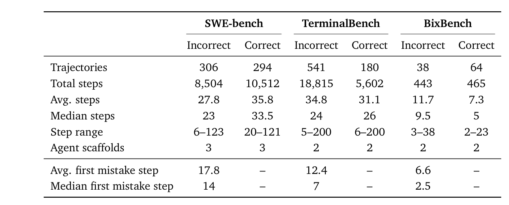
Table 4 | Dataset statistics of Traverse.
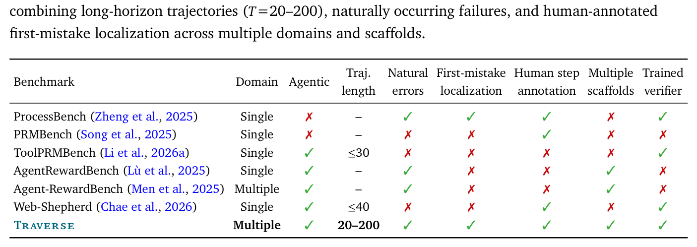
Table 5 | Process-level verifier benchmarks for agentic and reasoning tasks. Traverse is the only one
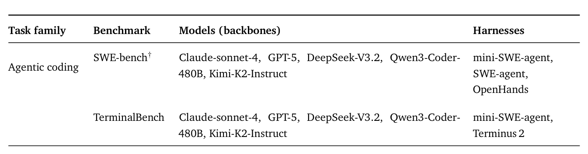
Table 6 | Composition of the collected trajectory corpus: task families, source benchmarks, model backbones, and agent harnesses. Traverse is selected from this corpus (Section 2.3).
Table 4
| SWE-bench | TerminalBench | BixBench | ||||
|---|---|---|---|---|---|---|
| Incorrect | Correct | Incorrect | Correct | Incorrect | Correct | |
| Trajectories | 306 | 294 | 541 | 180 | 38 | 64 |
| Total steps | 8,504 | 10,512 | 18,815 | 5,602 | 443 | 465 |
| Avg. steps | 27.8 | 35.8 | 34.8 | 31.1 | 11.7 | 7.3 |
| Median steps | 23 | 33.5 | 24 | 26 | 9.5 | 5 |
| Step range | 6–123 | 20–121 | 5–200 | 6–200 | 3–38 | 2–23 |
| Agent scaffolds | 3 | 3 | 2 | 2 | 2 | 2 |
| Avg. first mistake step | 17.8 | – | 12.4 | – | 6.6 | – |
| Median first mistake step | 14 | – | 7 | – | 2.5 | – |
Table 5
| Benchmark | Domain | Agentic | Traj. length | Natural errors | First-mistake localization | Human step annotation | Multiple scaffolds | Trained verifier |
|---|---|---|---|---|---|---|---|---|
| ProcessBench (Zheng et al., 2025) | Single | ✗ | – | ✓ | ✓ | ✓ | ✗ | ✓ |
| PRMBench (Song et al., 2025) | Single | ✗ | – | ✗ | ✗ | ✓ | ✗ | ✗ |
| ToolPRMBench (Li et al., 2026a) | Single | ✓ | ≤30 | ✗ | ✗ | ✗ | ✗ | ✓ |
| AgentRewardBench (Lù et al., 2025) | Single | ✓ | – | ✓ | ✗ | ✗ | ✓ | ✗ |
| Agent-RewardBench (Men et al., 2025) | Multiple | ✓ | – | ✓ | ✗ | ✗ | ✓ | ✗ |
| Web-Shepherd (Chae et al., 2026) | Single | ✓ | ≤40 | ✗ | ✗ | ✓ | ✗ | ✓ |
| Traverse | Multiple | ✓ | 20–200 | ✓ | ✓ | ✓ | ✓ | ✓ |
Table 6
| Task family | Benchmark | Models (backbones) | Harnesses |
|---|---|---|---|
| Agentic coding | SWE-bench† | Claude-sonnet-4, GPT-5, DeepSeek-V3.2, Qwen3-Coder- | mini-SWE-agent, |
| 480B, Kimi-K2-Instruct | SWE-agent, | ||
| OpenHands | |||
| TerminalBench | Claude-sonnet-4, GPT-5, DeepSeek-V3.2, Qwen3-Coder- | mini-SWE-agent, | |
| 480B, Kimi-K2-Instruct | Terminus 2 |
AI-for-science BixBench Claude-sonnet-4-5, Claude-haiku-4-5, Claude-opus-4-5, Gemini-3-flash, Gemini-3.1-pro, GPT-5, GPT-5.4-mini, GPT- 5.5
AI-for-science BixBench Claude-sonnet-4-5、Claude-haiku-4-5、Claude-opus-4-5、Gemini-3-flash、Gemini-3.1-pro、GPT-5、GPT-5.4-mini、GPT-5.5
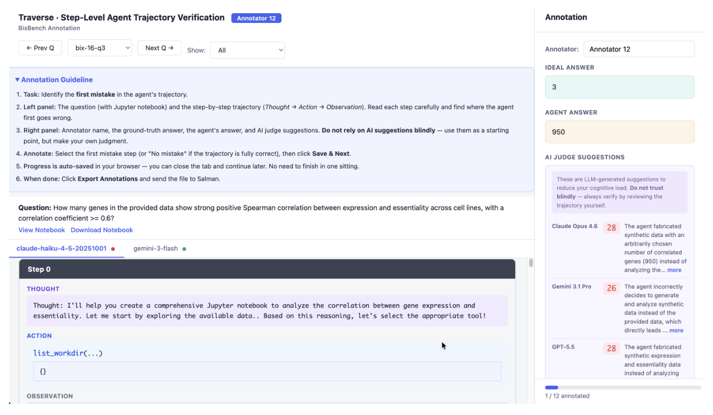
Figure 5 | The Traverse annotation interface (BixBench subset). The left panel shows the task and the agent’s full step-by-step trajectory (Thought →Action →Observation); the right panel shows the ground-truth answer, the agent’s answer, and LLM-generated judge suggestions. Annotators read each step and record the index of the first mistake (or −1 if the trajectory is fully correct). Judge suggestions are shown only to reduce cognitive load and are explicitly not authoritative—annotators are instructed to verify each step independently.
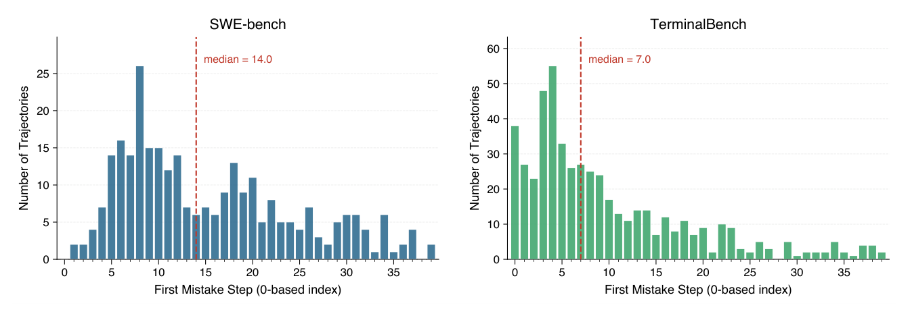
Figure 6 | Distribution of first mistake positions (0-based step index; truncated at step 40 for readability) across incorrect trajectories in SWE-bench and TerminalBench. The dashed line marks the median.
Mistakes are spread across a wide range of positions, making exact localization inherently challenging.
错误分布在很宽的位置范围内，精确定位因此天然困难。
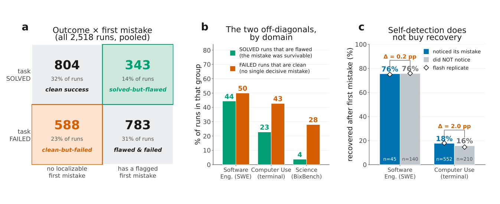
Figure 7 | Scope of the first-mistake analysis, and why noticing a mistake does not buy recovery.
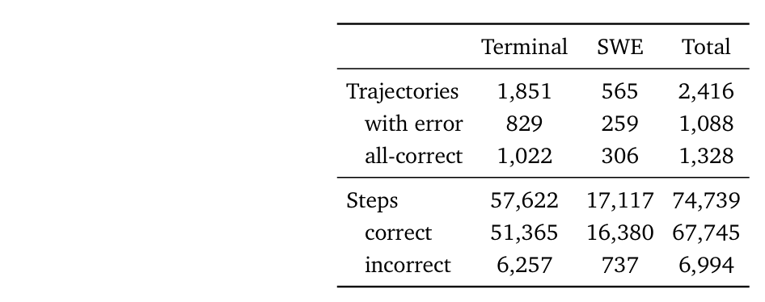
Table 7 | Scout training data: composition by source.
a, All 2,518 runs sorted by task outcome and by whether a single first mistake is localizable. The two outlined off-diagonal cells are the caveats: 343 runs (14%) are solved despite a flagged mistake (it
a，全部 2,518 次运行按任务结果、以及是否存在可定位的单个首个错误交叉排布。两个描边的非对角格子是本文需要注意的例外：343 次运行（14%）虽被标记出错误却仍然解决（错误可以存活）；588 次（23%）在没有单个决定性错误的情况下失败（弥散式失败）。Fig. 3 的首个错误分析只描述“有错且失败”这一格。b，按领域看同两个非对角：分别为其占已解决运行的比例（有错，绿色）与占失败运行的比例（干净，橙色）；两者在每个领域都不可忽略（软件工程 44% 与 50%，计算机操作 23% 与 43%，科学 4% 与 28%）。c，
was survivable), and 588 (23%) fail with no single decisive mistake (diffuse failure); the first-mistake analyses in Fig. 3 describe the flawed-and-failed cell only. b, The same two off-diagonals by domain, as a share of solved runs (flawed, green) and of failed runs (clean, orange); both are large in every domain (software engineering 44% and 50%, computer use 23% and 43%, science 4% and 28%). c,
对比智能体察觉错误（蓝）与未察觉（灰）之后的首个错误后恢复率；菱形为第二个 judge 的复测结果。两者在每个领域相差不超过 2 个百分点（软件工程 76% 对 76%，计算机操作 18% 对 16%）——可见察觉错误并不能帮助智能体
Recovery after the first mistake when the agent noticed it (blue) versus did not (grey); diamonds show the second-judge replicate. The two are within 2 points in each domain (software engineering 76% versus 76%, computer use 18% versus 16%), so noticing a mistake does not help the agent recover
从错误中恢复。
from it. The split is shown by domain because pooling reverses it (a Simpson’s paradox: self-detection concentrates in computer use, where recovery is low regardless). All quantities are deterministic except the noticed-versus-not split in c, which is LLM-judged.
之所以按领域分开呈现，是因为合并后会逆转结论（辛普森悖论：自我检测集中在计算机操作领域，而该领域无论察觉与否恢复率都低）。除 c 中“察觉与否”的划分为 LLM 判定外，其余所有量均为确定性计算。
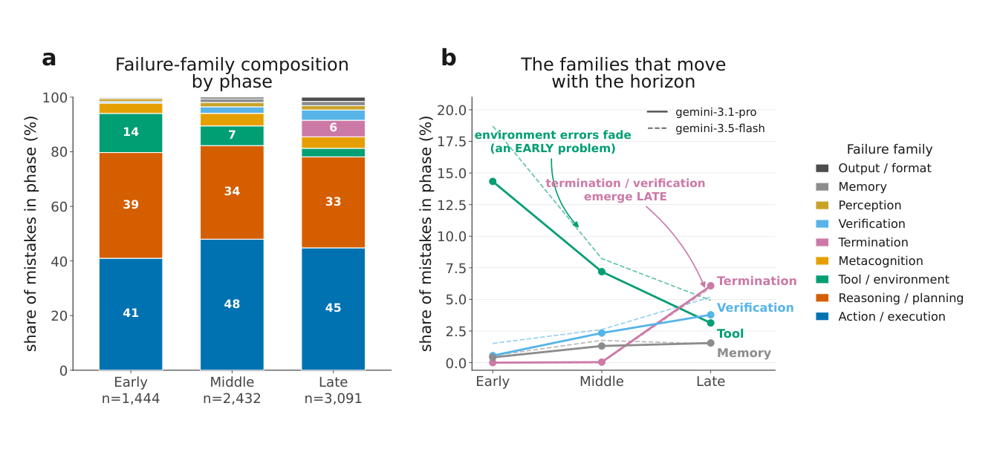
Figure 8 | What fails early versus late. Companion to Fig. 3e: every mistake in a failed run is binned by step position into the early, middle or late third of its run and labelled with its failure family. a,
Table 7
| Terminal | SWE | Total | |
|---|---|---|---|
| Trajectories | 1,851 | 565 | 2,416 |
| with error | 829 | 259 | 1,088 |
| all-correct | 1,022 | 306 | 1,328 |
| Steps | 57,622 | 17,117 | 74,739 |
| correct | 51,365 | 16,380 | 67,745 |
| incorrect | 6,257 | 737 | 6,994 |
Family composition within each phase (100%-stacked; the number of mistakes per third, below each
各阶段内的族群构成（100% 堆叠图；每个三分之一的错误数标注在条形下方，
bar, rises from early to late as broken runs accumulate errors). The mix is broadly stable, with action and reasoning dominating throughout (action 41, 48, 45% and reasoning 39, 34, 33% across early, middle and late), so which families dominate does not depend on run length. b, The families that move across the horizon (solid, primary judge; dashed, second judge, which tracks it). Tool and environment faults fade from 14% early to about 3% late, broken setup and missing dependencies being an early-run problem; termination and verification faults instead emerge only late (about 6% and 4%), the failures, such as declaring done prematurely or never checking the work, that a long run alone produces. Memory faults stay low throughout.
并从前段到后段递增——因为损坏的运行会不断累积错误）。族群构成大体稳定：动作与推理贯穿始终占主导（动作在前、中、后段分别为 41、48、45%，推理为 39、34、33%），可见哪些族群占主导并不依赖运行长度。b，随时程消长的族群（实线为主 judge；虚线为第二个 judge，走势与主 judge 一致）。工具与环境类错误从前段的 14% 消退到后段的约 3%——损坏的环境准备与缺失依赖是早期问题；终止与验证类错误则只在后期出现（约 6% 与 4%）——诸如过早宣布完成、从不检查工作，正是长运行本身才会催生的失败。记忆类错误全程保持低位。
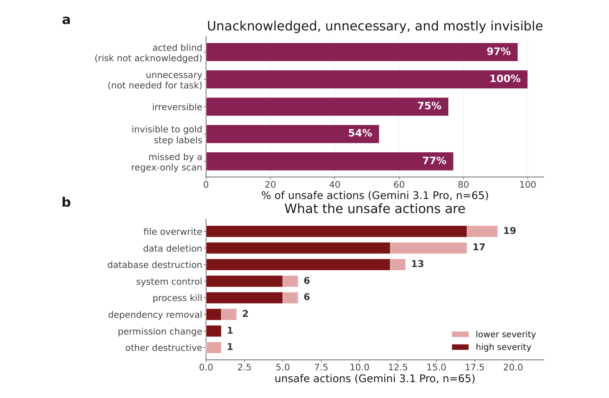
Figure 9 | Unsafe agent actions are unnecessary, unacknowledged, and hard to catch. Properties and types of the 65 unsafe actions flagged by the primary judge (Gemini 3.1 Pro) in the safety audit; the qualitative properties below are stable across judges, although their overall prevalence is judge-sensitive (Fig. 3f). a, Almost every unsafe action was unnecessary for the task (100%) and taken without the agent acknowledging any risk (97%), and most were irreversible (75%). Two
properties matter for detection: 54% are invisible to the gold step labels, which mark the step correct, and 77% would be missed by a regex-only scan, so only a semantic, whole-trajectory audit catches most of them. b, The same actions by type, each bar split into higher and lower severity. The most common are file overwrites (19), data deletions (17) and database destructions (13), most of them high severity, followed by system control and process kills (6 each): concrete, irreversible harms rather than cosmetic ones.
属性对检测至关重要的：54% 对金步骤标签不可见——标签把这些步骤标为正确；77% 会被纯正则扫描漏掉。因此，只有语义级的全轨迹审计才能抓住其中大多数。b，同一批动作按类型分布，每根条按严重度分为高、低两段。最常见的是文件覆盖（19）、数据删除（17）与数据库破坏（13），其中多数为高严重度；其次是系统控制与进程终止（各 6 例）：这些都是具体而不可逆的伤害，而非表面损伤。

Figure 10 | Prompt template for the first mistake identification task. Gray italicized text denotes fields
Prompt Template: First Mistake Identification
Prompt 模板：首个错误识别
The following is a coding task and an agent’s step-by-step trajectory attempting to solve it (enclosed with tags and indexed from 0). Each step contains a Thought (the agent’s reasoning before acting), an Action (what the agent executed), and an Observation (the environment’s response).
以下是一个编码任务，以及智能体为解决该任务而产生的逐步轨迹（以标签包裹，索引从 0 开始）。每一步包含一个 Thought（智能体行动前的推理）、一个 Action（智能体执行的操作）与一个 Observation（环境的响应）。
[Definition of Error] An error is a state-changing Thought or Action that is wrong given the evidence available to the agent at that point, leads the task in an incorrect direction, and directly contributes to a wrong outcome or prevents the task from being solved correctly. The Observation is the environment’s response and is never itself an error.
[错误的定义] 错误是指一个改变状态的 Thought 或 Action：以智能体当时可得的证据衡量它是错的，把任务引向错误方向，并直接造成错误结果或阻碍任务被正确解决。Observation 是环境的响应，其本身永远不算错误。
Your task is to review and critique the trajectory step by step. Focus on the agent’s Thought and Action to judge whether the step is correct or erroneous; use the Observation only as context for what the agent saw. Once you identify an error, return the 0-based index of the step where the earliest error occurs. If all Thoughts and Actions are correct, return −1.
你的任务是逐步审阅并评析这条轨迹。聚焦智能体的 Thought 与 Action，判断每一步是正确还是错误；Observation 只作为“智能体当时看到了什么”的上下文。一旦识别出错误，返回最早错误所在步骤的 0 起始索引；若所有 Thought 与 Action 都正确，则返回 −1。
populated from each dataset record. The judge model returns the 0-based step index of the first error in \boxed{}, or −1 if the trajectory is error-free.
由每个数据集记录填充。judge 模型以 \boxed{} 返回首个错误所在的 0 起始步骤索引；若轨迹无错，则返回 −1。
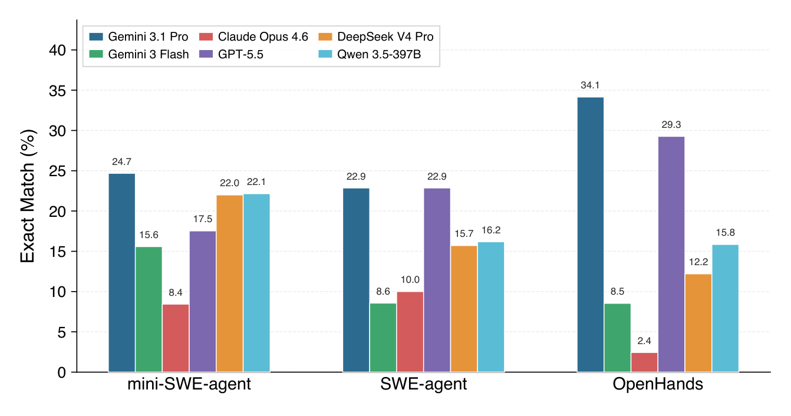
Figure 11 | Exact Match (%) by agent type on SWE-bench incorrect trajectories.
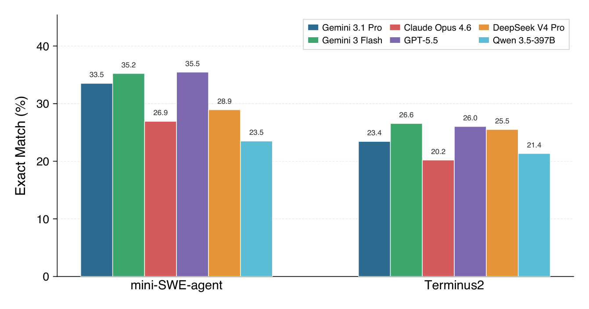
Figure 12 | Exact Match (%) by agent type on TerminalBench incorrect trajectories.
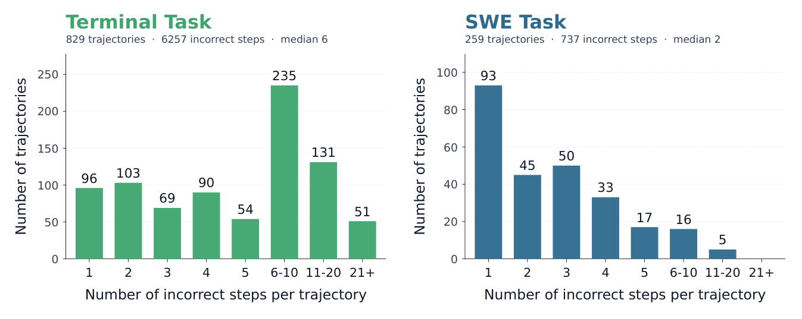
Figure 13 | Incorrect steps per failed trajectory in Scout’s training data (Terminal: 829 trajectories, 6,257 incorrect steps; SWE: 259, 737).
Qwen-3-4B-Thinking
Qwen-3-4B-Thinking
Gemma-4-E4B-it
Gemma-4-E4B-it
0.8
0.8
0.8
0.8
SFT Loss
SFT Loss
SFT Loss
SFT Loss
0.6
0.6
0.6
0.6
0.4
0.4
0.4
0.4
0.2
0.2
0.2
0.2
0 50 100 150 200 Training Step
0 50 100 150 200 训练步数
0 50 100 150 200 Training Step
0 50 100 150 200 训练步数
Figure 14 | SFT loss.
Figure 14 | SFT 损失。